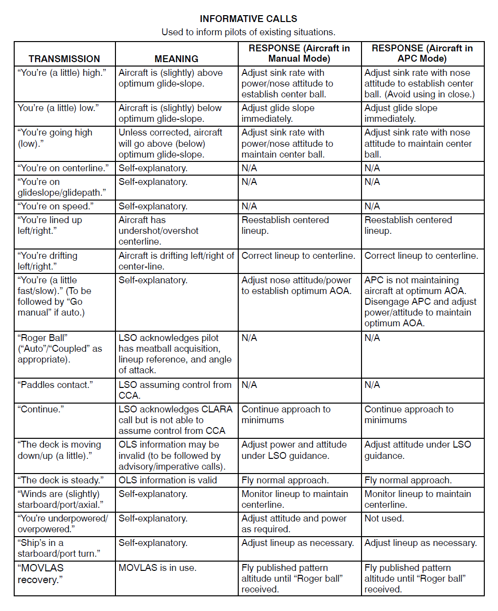
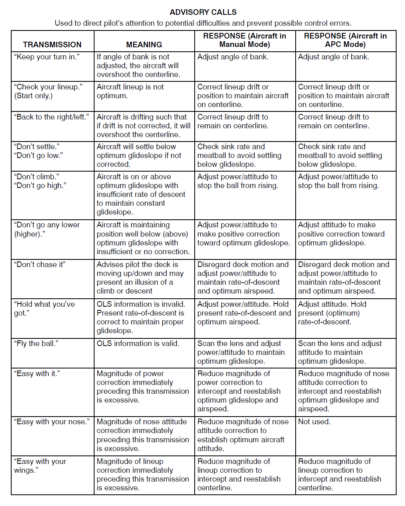
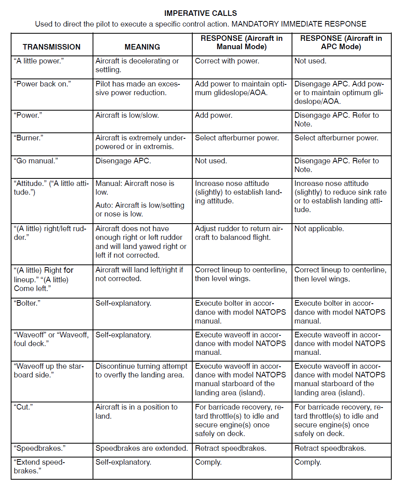
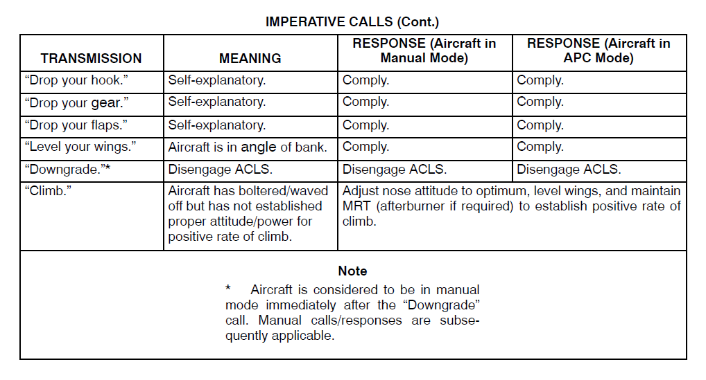

Bu sayfa P-816'nın Ek C kısmının (s. C-1 – C-4) Türkçe eğitim uyarlamasıdır. Terimler orijinal İngilizce hâliyle korunmuştur. Esas metin İngilizce orijinaldir; çelişki hâlinde orijinal geçerlidir. Belgedeki tutarsızlıklar Kaynak notu kutularıyla işaretlenmiştir (5 adet).
C.1Bilgilendirici çağrılar (Informative)
Ek C nasıl okunur?
Ek C, LSO'nun telsiz çağrılarını dört şekilde (Şekil C-1 – C-4, "LSO Radio Calls 1–4") tablo hâlinde verir. Çağrılar üç gruba ayrılır; bunlar Bölüm 1'de (101) sayılan üç çağrı tipiyle aynıdır: INFORMATIVE, ADVISORY ve IMPERATIVE.
| Grup | Tablodaki tanım | Şekil |
|---|---|---|
| INFORMATIVE CALLS (bilgilendirici) | Pilotları mevcut durumlar hakkında bilgilendirmek için kullanılır. | C-1 |
| ADVISORY CALLS (tavsiye) | Pilotun dikkatini olası zorluklara çekmek ve olası kumanda hatalarını önlemek için kullanılır. | C-2 |
| IMPERATIVE CALLS (emir) | Pilota belirli bir kumanda hareketini yaptırmak için kullanılır. ZORUNLU, ANINDA YANIT (MANDATORY IMMEDIATE RESPONSE). | C-3 ve C-4 ("IMPERATIVE CALLS (Cont.)") |
- C-1.01Figure C-1 LSO Radio Calls 1
- C-2.01Figure C-2 LSO Radio Calls 2
- C-3.01Figure C-3 LSO Radio Calls 3
- C-4.01Figure C-4 LSO Radio Calls 4
- C-1.F1[Figure C-1] INFORMATIVE CALLS: Used to inform pilots of existing situations. | Columns: TRANSMISSION | MEANING | RESPONSE (Aircraft in Manual Mode) | RESPONSE (Aircraft in APC Mode)
- C-2.F1[Figure C-2] ADVISORY CALLS: Used to direct pilot’s attention to potential difficulties and prevent possible control errors. | Columns: TRANSMISSION | MEANING | RESPONSE (Aircraft in Manual Mode) | RESPONSE (Aircraft in APC Mode)
- C-3.F1[Figure C-3] IMPERATIVE CALLS: Used to direct the pilot to execute a specific control action. MANDATORY IMMEDIATE RESPONSE | Columns: TRANSMISSION | MEANING | RESPONSE (Aircraft in Manual Mode) | RESPONSE (Aircraft in APC Mode)
- C-4.F1[Figure C-4] IMPERATIVE CALLS (Cont.) | Columns: TRANSMISSION | MEANING | RESPONSE (Aircraft in Manual Mode) | RESPONSE (Aircraft in APC Mode)
Her tablonun dört sütunu vardır: TRANSMISSION (LSO'nun yaptığı çağrı), MEANING (anlamı), RESPONSE (Aircraft in Manual Mode) (uçak manual moddayken pilotun yanıtı) ve RESPONSE (Aircraft in APC Mode) (uçak APC modundayken pilotun yanıtı). Aşağıdaki tablolarda çağrılar İngilizce ve tırnak içinde aynen verilmiştir; parantez içindeki sözcükler ve eğik çizgili seçenekler (ör. "(a little)", "left/right") kaynaktaki gibidir.
- C-1.F1[Figure C-1] INFORMATIVE CALLS: Used to inform pilots of existing situations. | Columns: TRANSMISSION | MEANING | RESPONSE (Aircraft in Manual Mode) | RESPONSE (Aircraft in APC Mode)
- C-2.F1[Figure C-2] ADVISORY CALLS: Used to direct pilot’s attention to potential difficulties and prevent possible control errors. | Columns: TRANSMISSION | MEANING | RESPONSE (Aircraft in Manual Mode) | RESPONSE (Aircraft in APC Mode)
- C-3.F1[Figure C-3] IMPERATIVE CALLS: Used to direct the pilot to execute a specific control action. MANDATORY IMMEDIATE RESPONSE | Columns: TRANSMISSION | MEANING | RESPONSE (Aircraft in Manual Mode) | RESPONSE (Aircraft in APC Mode)
- C-4.F1[Figure C-4] IMPERATIVE CALLS (Cont.) | Columns: TRANSMISSION | MEANING | RESPONSE (Aircraft in Manual Mode) | RESPONSE (Aircraft in APC Mode)
APC modu. Belge APC kısaltmasını açmaz; tablodan şunlar anlaşılır: APC'deki uçak için auto da denir (hız çağrısı "if auto" ise "Go manual" ile izlenir); "Go manual." çağrısının anlamı APC'yi devreden çıkarmaktır (Disengage APC); hız çağrısının APC yanıtı "APC is not maintaining aircraft at optimum AOA" der, yani APC'nin uçağı optimum AOA'da tutması beklenir. Bu nedenle APC yanıtlarında pilot düzeltmeyi çoğunlukla burun duruşuyla (attitude) yapar; güç gerektiren bazı çağrılarda ise önce APC devreden çıkarılır. Ayrıntılı karşılaştırma C.4'tedir.
- C-1.F10[Figure C-1] INFORMATIVE | TRANSMISSION: “You’re (a little fast/slow).” (To be followed by “Go manual” if auto.) | MEANING: Self-explanatory. | RESPONSE (Manual): Adjust nose attitude/power to establish optimum AOA. | RESPONSE (APC): APC is not maintaining aircraft at optimum AOA. Disengage APC and adjust power/attitude to maintain optimum AOA.
- C-3.F6[Figure C-3] IMPERATIVE | TRANSMISSION: “Go manual.” | MEANING: Disengage APC. | RESPONSE (Manual): Not used. | RESPONSE (APC): Disengage APC. Refer to Note.
- C-1.F2[Figure C-1] INFORMATIVE | TRANSMISSION: “You’re (a little) high.” | MEANING: Aircraft is (slightly) above optimum glide-slope. | RESPONSE (Manual): Adjust sink rate with power/nose attitude to establish center ball. | RESPONSE (APC): Adjust sink rate with nose attitude to establish center ball. (Avoid using in close.)
- C-3.F3[Figure C-3] IMPERATIVE | TRANSMISSION: “Power back on.” | MEANING: Pilot has made an excessive power reduction. | RESPONSE (Manual): Add power to maintain optimum glideslope/AOA. | RESPONSE (APC): Disengage APC. Add power to maintain optimum glideslope/AOA.

Şekil, INFORMATIVE CALLS tablosudur ("Used to inform pilots of existing situations"): 18 çağrı, dört sütun (TRANSMISSION, MEANING, RESPONSE — Manual Mode, RESPONSE — APC Mode). Satırlar aşağıda konularına göre gruplanarak Türkçe tablolarla verilmiştir.
- C-1.01Figure C-1 LSO Radio Calls 1
- C-1.F1[Figure C-1] INFORMATIVE CALLS: Used to inform pilots of existing situations. | Columns: TRANSMISSION | MEANING | RESPONSE (Aircraft in Manual Mode) | RESPONSE (Aircraft in APC Mode)
Süzülüş yolu (glideslope) çağrıları
Bu çağrılar uçağın optimum glideslope'a göre konumunu bildirir. "high" ve "going high (low)" çağrılarında manual modda batma oranı güç/burun duruşu ile, APC modunda yalnızca burun duruşuyla ayarlanır; "high" çağrısının APC yanıtına ayrıca "(Avoid using in close.)" notu düşülmüştür. "low" çağrısında iki modda da yanıt aynıdır: glide slope hemen ayarlanır.
| Çağrı (TRANSMISSION) | Anlamı (MEANING) | Manual mod yanıtı | APC modu yanıtı |
|---|---|---|---|
| “You’re (a little) high.” | Uçak optimum glideslope'un (biraz) üstünde. | Merkez topu (center ball) kurmak için batma oranını (sink rate) güç/burun duruşu (power/nose attitude) ile ayarla. | Merkez topu kurmak için batma oranını burun duruşuyla ayarla. (In close kullanmaktan kaçının.) |
| You’re (a little) low.” | Uçak optimum glideslope'un (biraz) altında. | Glide slope'u hemen ayarla. | Glide slope'u hemen ayarla. |
| “You’re going high (low).” | Düzeltilmezse uçak optimum glideslope'un üstüne çıkacak (altına inecek). | Merkez topu korumak için batma oranını güç/burun duruşu ile ayarla. | Merkez topu korumak için batma oranını burun duruşuyla ayarla. |
| “You’re on glideslope/glidepath.” | Açıklama gerektirmez (self-explanatory). | Yok (N/A). | Yok (N/A). |
- C-1.F2[Figure C-1] INFORMATIVE | TRANSMISSION: “You’re (a little) high.” | MEANING: Aircraft is (slightly) above optimum glide-slope. | RESPONSE (Manual): Adjust sink rate with power/nose attitude to establish center ball. | RESPONSE (APC): Adjust sink rate with nose attitude to establish center ball. (Avoid using in close.)
- C-1.F3[Figure C-1] INFORMATIVE | TRANSMISSION: You’re (a little) low.” | MEANING: Aircraft is (slightly) below optimum glide-slope. | RESPONSE (Manual): Adjust glide slope immediately. | RESPONSE (APC): Adjust glide slope immediately.
- C-1.F4[Figure C-1] INFORMATIVE | TRANSMISSION: “You’re going high (low).” | MEANING: Unless corrected, aircraft will go above (below) optimum glide-slope. | RESPONSE (Manual): Adjust sink rate with power/nose attitude to maintain center ball. | RESPONSE (APC): Adjust sink rate with nose attitude to maintain center ball.
- C-1.F6[Figure C-1] INFORMATIVE | TRANSMISSION: “You’re on glideslope/glidepath.” | MEANING: Self-explanatory. | RESPONSE (Manual): N/A | RESPONSE (APC): N/A
Hız ve güç
"You’re on speed." bilgi verir, yanıt gerektirmez. Hız çağrısında uçak auto'daysa (APC) ardından "Go manual" gelir; APC yanıtı APC'yi devreden çıkarıp gücü/duruşu elle ayarlamaktır. "You’re underpowered/overpowered." çağrısı APC modunda kullanılmaz.
| Çağrı (TRANSMISSION) | Anlamı (MEANING) | Manual mod yanıtı | APC modu yanıtı |
|---|---|---|---|
| “You’re on speed.” | Açıklama gerektirmez (self-explanatory). | Yok (N/A). | Yok (N/A). |
| “You’re (a little fast/slow).” (To be followed by “Go manual” if auto.) | Açıklama gerektirmez (self-explanatory). Uçak auto'daysa ardından “Go manual” gelir. | Optimum AOA'yı kurmak için burun duruşunu/gücü ayarla. | APC uçağı optimum AOA'da tutmuyor. APC'yi devreden çıkar (disengage) ve optimum AOA'yı korumak için gücü/duruşu ayarla. |
| “You’re underpowered/overpowered.” | Açıklama gerektirmez (self-explanatory). | Duruşu ve gücü gerektiği gibi ayarla. | Kullanılmaz (not used). |
- C-1.F7[Figure C-1] INFORMATIVE | TRANSMISSION: “You’re on speed.” | MEANING: Self-explanatory. | RESPONSE (Manual): N/A | RESPONSE (APC): N/A
- C-1.F10[Figure C-1] INFORMATIVE | TRANSMISSION: “You’re (a little fast/slow).” (To be followed by “Go manual” if auto.) | MEANING: Self-explanatory. | RESPONSE (Manual): Adjust nose attitude/power to establish optimum AOA. | RESPONSE (APC): APC is not maintaining aircraft at optimum AOA. Disengage APC and adjust power/attitude to maintain optimum AOA.
- C-1.F17[Figure C-1] INFORMATIVE | TRANSMISSION: “You’re underpowered/overpowered.” | MEANING: Self-explanatory. | RESPONSE (Manual): Adjust attitude and power as required. | RESPONSE (APC): Not used.
Hat (lineup) ve dış etkenler
"lined up" çağrısı hattın kısa geçildiğini/aşıldığını (yanıt: ortalanmış hattı yeniden kur), "drifting" çağrısı uçağın kaymakta olduğunu (yanıt: hattı merkez hattına düzelt) bildirir. Rüzgâr ve geminin dönüşüyle ilgili çağrılarda da pilot hattı izler ya da ayarlar. Bu grupta iki modun yanıtları aynıdır.
| Çağrı (TRANSMISSION) | Anlamı (MEANING) | Manual mod yanıtı | APC modu yanıtı |
|---|---|---|---|
| “You’re on centerline.” | Açıklama gerektirmez (self-explanatory). | Yok (N/A). | Yok (N/A). |
| “You’re lined up left/right.” | Uçak merkez hattını kısa geçmiş / aşmış (undershot/overshot). | Ortalanmış hattı (centered lineup) yeniden kur. | Ortalanmış hattı yeniden kur. |
| “You’re drifting left/right.” | Uçak merkez hattının soluna/sağına kayıyor (drifting). | Hattı merkez hattına düzelt. | Hattı merkez hattına düzelt. |
| “Winds are (slightly) starboard/port/axial.” | Açıklama gerektirmez (self-explanatory). | Merkez hattını korumak için hattı izle (monitor lineup). | Merkez hattını korumak için hattı izle. |
| “Ship’s in a starboard/port turn.” | Açıklama gerektirmez (self-explanatory). | Hattı gerektiği gibi ayarla. | Hattı gerektiği gibi ayarla. |
- C-1.F5[Figure C-1] INFORMATIVE | TRANSMISSION: “You’re on centerline.” | MEANING: Self-explanatory. | RESPONSE (Manual): N/A | RESPONSE (APC): N/A
- C-1.F8[Figure C-1] INFORMATIVE | TRANSMISSION: “You’re lined up left/right.” | MEANING: Aircraft has undershot/overshot centerline. | RESPONSE (Manual): Reestablish centered lineup. | RESPONSE (APC): Reestablish centered lineup.
- C-1.F9[Figure C-1] INFORMATIVE | TRANSMISSION: “You’re drifting left/right.” | MEANING: Aircraft is drifting left/right of center-line. | RESPONSE (Manual): Correct lineup to centerline. | RESPONSE (APC): Correct lineup to centerline.
- C-1.F16[Figure C-1] INFORMATIVE | TRANSMISSION: “Winds are (slightly) starboard/port/axial.” | MEANING: Self-explanatory. | RESPONSE (Manual): Monitor lineup to maintain centerline. | RESPONSE (APC): Monitor lineup to maintain centerline.
- C-1.F18[Figure C-1] INFORMATIVE | TRANSMISSION: “Ship’s in a starboard/port turn.” | MEANING: Self-explanatory. | RESPONSE (Manual): Adjust lineup as necessary. | RESPONSE (APC): Adjust lineup as necessary.
LSO'nun kontrolü ve onay çağrıları
"Roger Ball", "Paddles contact." ve "Continue." LSO'nun kontrol ve onay çağrılarıdır. "Roger Ball" ve "Paddles contact." için pilot yanıtı yoktur (N/A). "Continue." çağrısında LSO pilotun CLARA çağrısını onaylar ama kontrolü CCA'dan devralamaz; pilot yaklaşmaya minimumlara kadar devam eder. MOVLAS kullanımdayken ("MOVLAS recovery.") pilot "Roger ball" alınana kadar yayımlanmış patern irtifasını uçar.
| Çağrı (TRANSMISSION) | Anlamı (MEANING) | Manual mod yanıtı | APC modu yanıtı |
|---|---|---|---|
| “Roger Ball” (“Auto”/“Coupled” as appropriate). | LSO, pilotun meatball'u gördüğünü (meatball acquisition), hat referansını (lineup reference) ve hücum açısını (angle of attack) aldığını onaylar. Duruma göre “Auto” / “Coupled” eklenir. | Yok (N/A). | Yok (N/A). |
| “Paddles contact.” | LSO kontrolü CCA'dan devralıyor. | Yok (N/A). | Yok (N/A). |
| “Continue.” | LSO CLARA çağrısını onaylar ama kontrolü CCA'dan devralamaz. | Yaklaşmaya minimumlara kadar devam et. | Yaklaşmaya minimumlara kadar devam et. |
| “MOVLAS recovery.” | MOVLAS kullanımda. | “Roger ball” alınana kadar yayımlanmış patern irtifasını (published pattern altitude) uç. | “Roger ball” alınana kadar yayımlanmış patern irtifasını uç. |
- C-1.F11[Figure C-1] INFORMATIVE | TRANSMISSION: “Roger Ball” (“Auto”/“Coupled” as appropriate). | MEANING: LSO acknowledges pilot has meatball acquisition, lineup reference, and angle of attack. | RESPONSE (Manual): N/A | RESPONSE (APC): N/A
- C-1.F12[Figure C-1] INFORMATIVE | TRANSMISSION: “Paddles contact.” | MEANING: LSO assuming control from CCA. | RESPONSE (Manual): N/A | RESPONSE (APC): N/A
- C-1.F13[Figure C-1] INFORMATIVE | TRANSMISSION: “Continue.” | MEANING: LSO acknowledges CLARA call but is not able to assume control from CCA | RESPONSE (Manual): Continue approach to minimums | RESPONSE (APC): Continue approach to minimums
- C-1.F19[Figure C-1] INFORMATIVE | TRANSMISSION: “MOVLAS recovery.” | MEANING: MOVLAS is in use. | RESPONSE (Manual): Fly published pattern altitude until “Roger ball” received. | RESPONSE (APC): Fly published pattern altitude until “Roger ball” received.
- Roger ball: Zip Lip ya da EMCON'da LSO, uçak groove'a yaklaşırken cut ışıklarını kısa süre yakarak "Roger ball" der (1-12.16, 1-12.17); Zip Lip'te söylenmemiş ball call da aynı şekilde onaylanır (2-18.18). Telsizle yapılan ball call'u LSO'lar "roger"lar (2-25.08); Case III örneğinde LSO'nun yanıtı "Roger ball"dur (2-27.21). Ek C bu çağrının anlamını meatball, hat referansı ve AOA'nın onayı olarak verir; Ek A sözlüğü ise "Roger Ball"ı inişe izin verildiğini ve LSO'nun pozitif kontrolü aldığını gösteren çağrı olarak tanımlar (A-6.04).
- Paddles: LSO'nun lakabı ve çağrı adıdır (1-2.17; Ek A, A-5.06); "Paddles contact." LSO'nun kontrolü devraldığını bildirir.
- CLARA: Top görünmüyorsa pilotun yaptığı çağrıdır ("405, Clara", 2-18.16, 2-18.19; Ek A: "Meatball is not in sight", A-2.16). Ek C'deki "Continue.", LSO'nun bu çağrıya kontrolü devralamadığı durumdaki yanıtıdır.
- MOVLAS: Birincil sistem çalışmadığında, IFLOLS stabilizasyon limitleri aşıldığında ve eğitimde kullanılan yedek iniş yardımcısıdır (1-14.02); topu doğrudan LSO kontrol eder (1-15.01).
- C-1.F11[Figure C-1] INFORMATIVE | TRANSMISSION: “Roger Ball” (“Auto”/“Coupled” as appropriate). | MEANING: LSO acknowledges pilot has meatball acquisition, lineup reference, and angle of attack. | RESPONSE (Manual): N/A | RESPONSE (APC): N/A
- C-1.F12[Figure C-1] INFORMATIVE | TRANSMISSION: “Paddles contact.” | MEANING: LSO assuming control from CCA. | RESPONSE (Manual): N/A | RESPONSE (APC): N/A
- C-1.F13[Figure C-1] INFORMATIVE | TRANSMISSION: “Continue.” | MEANING: LSO acknowledges CLARA call but is not able to assume control from CCA | RESPONSE (Manual): Continue approach to minimums | RESPONSE (APC): Continue approach to minimums
- C-1.F19[Figure C-1] INFORMATIVE | TRANSMISSION: “MOVLAS recovery.” | MEANING: MOVLAS is in use. | RESPONSE (Manual): Fly published pattern altitude until “Roger ball” received. | RESPONSE (APC): Fly published pattern altitude until “Roger ball” received.
Ek C'de "Paddles contact." = "LSO assuming control from CCA." ve "Continue." = "... not able to assume control from CCA". Belge CCA'yı iki ayrı anlamda kullanır: Bölüm 1'de Carrier Control Area (geminin 50 NM çevresi, 1-3.25, 1-3.26) ve ACLS Mode III için Carrier Controlled Approach (1-10.19); Ek A sözlüğü de "CCA: Carrier-controlled approach similar to a GCA" der (A-2.10). Ek C kısaltmayı açmaz; kontrolün LSO'ya geçişi bağlamı Carrier Controlled Approach anlamına uyar.
- C-1.F12[Figure C-1] INFORMATIVE | TRANSMISSION: “Paddles contact.” | MEANING: LSO assuming control from CCA. | RESPONSE (Manual): N/A | RESPONSE (APC): N/A
- C-1.F13[Figure C-1] INFORMATIVE | TRANSMISSION: “Continue.” | MEANING: LSO acknowledges CLARA call but is not able to assume control from CCA | RESPONSE (Manual): Continue approach to minimums | RESPONSE (APC): Continue approach to minimums
Güverte hareketi ve OLS
Güverte hareket ederken OLS bilgisi geçersiz olabilir; LSO ardından advisory/imperative çağrılar yapar ve pilot LSO'nun yönlendirmesiyle düzeltir (APC'de yalnızca duruşla). Güverte sabitse OLS bilgisi geçerlidir ve normal yaklaşma uçulur.
| Çağrı (TRANSMISSION) | Anlamı (MEANING) | Manual mod yanıtı | APC modu yanıtı |
|---|---|---|---|
| “The deck is moving down/up (a little).” | OLS bilgisi geçersiz olabilir (ardından advisory/imperative çağrılar gelir). | Gücü ve duruşu LSO'nun yönlendirmesiyle (under LSO guidance) ayarla. | Duruşu LSO'nun yönlendirmesiyle ayarla. |
| “The deck is steady.” | OLS bilgisi geçerli. | Normal yaklaşma uç. | Normal yaklaşma uç. |
- C-1.F14[Figure C-1] INFORMATIVE | TRANSMISSION: “The deck is moving down/up (a little).” | MEANING: OLS information may be invalid (to be followed by advisory/imperative calls). | RESPONSE (Manual): Adjust power and attitude under LSO guidance. | RESPONSE (APC): Adjust attitude under LSO guidance.
- C-1.F15[Figure C-1] INFORMATIVE | TRANSMISSION: “The deck is steady.” | MEANING: OLS information is valid | RESPONSE (Manual): Fly normal approach. | RESPONSE (APC): Fly normal approach.
Bölüm soruları
0 / 13“You’re (a little) high.” çağrısı hangi gruptadır?
Şekil C-1, INFORMATIVE CALLS: "Used to inform pilots of existing situations."
Kaynak: s. C-1 (C-1.F1, C-1.F2)
Uçak APC modundayken “You’re (a little) high.” çağrısına pilotun yanıtı nedir?
Manual: "power/nose attitude"; APC: "Adjust sink rate with nose attitude to establish center ball. (Avoid using in close.)"
Kaynak: s. C-1 (C-1.F2)
“You’re (a little) low.” çağrısına manual ve APC modlarındaki yanıt nedir?
"Adjust glide slope immediately." her iki sütunda aynıdır. "You’re going high (low)." çağrısında ise merkez top korunur (manual: güç/burun duruşu, APC: burun duruşu).
Kaynak: s. C-1 (C-1.F3, C-1.F4)
Uçak auto'dayken (APC) “You’re (a little fast/slow).” çağrısından sonra LSO ne der ve pilot ne yapar?
"(To be followed by 'Go manual' if auto.)" APC yanıtı: "APC is not maintaining aircraft at optimum AOA. Disengage APC and adjust power/attitude to maintain optimum AOA."
Kaynak: s. C-1 (C-1.F10, C-1.F7)
Hangi bilgilendirici çağrı APC modunda kullanılmaz?
APC sütununda "Not used." yazar; manual yanıt "Adjust attitude and power as required."
Kaynak: s. C-1 (C-1.F17)
“You’re lined up left/right.” çağrısı ne anlama gelir?
"Aircraft has undershot/overshot centerline." → "Reestablish centered lineup." Kayma (drifting) ayrı bir çağrıdır: "Correct lineup to centerline."
Kaynak: s. C-1 (C-1.F8, C-1.F9)
Pilot yanıtı tabloda "N/A" olarak verilen çağrı hangisidir?
"You’re on centerline.", "You’re on glideslope/glidepath." ve "You’re on speed." "Self-explanatory." olup iki yanıt sütunu "N/A"dır.
Kaynak: s. C-1 (C-1.F5, C-1.F6, C-1.F7)
“Winds are (slightly) starboard/port/axial.” ve “Ship’s in a starboard/port turn.” çağrılarında pilot ne yapar?
"Monitor lineup to maintain centerline." / "Adjust lineup as necessary." — iki modda aynı.
Kaynak: s. C-1 (C-1.F16, C-1.F18)
“Roger Ball” çağrısıyla LSO neyi onaylar?
"LSO acknowledges pilot has meatball acquisition, lineup reference, and angle of attack." Duruma göre "Auto"/"Coupled" eklenir.
Kaynak: s. C-1 (C-1.F11)
“Paddles contact.” çağrısı ne anlama gelir?
"LSO assuming control from CCA." Pilot yanıtı: N/A.
Kaynak: s. C-1 (C-1.F12)
Pilot CLARA çağrısı yaptı; LSO kontrolü CCA'dan devralamıyor. LSO'nun çağrısı ve pilotun yanıtı nedir?
"Continue." = "LSO acknowledges CLARA call but is not able to assume control from CCA" → "Continue approach to minimums".
Kaynak: s. C-1 (C-1.F13)
“MOVLAS recovery.” çağrısında pilot ne yapar?
"MOVLAS is in use." → "Fly published pattern altitude until 'Roger ball' received." (iki modda aynı).
Kaynak: s. C-1 (C-1.F19)
“The deck is moving down/up (a little).” çağrısı ne anlama gelir?
Manual yanıt: güç ve duruşu LSO'nun yönlendirmesiyle ayarla; APC: duruşu LSO'nun yönlendirmesiyle ayarla. "The deck is steady." = OLS bilgisi geçerli, normal yaklaşma.
Kaynak: s. C-1 (C-1.F14, C-1.F15)
C.2Tavsiye çağrıları (Advisory)
ADVISORY CALLS, pilotun dikkatini olası zorluklara çekmek ve olası kumanda hatalarını önlemek için kullanılır (Used to direct pilot’s attention to potential difficulties and prevent possible control errors). Tablo 12 çağrı içerir.
- C-2.F1[Figure C-2] ADVISORY CALLS: Used to direct pilot’s attention to potential difficulties and prevent possible control errors. | Columns: TRANSMISSION | MEANING | RESPONSE (Aircraft in Manual Mode) | RESPONSE (Aircraft in APC Mode)

Şekil, ADVISORY CALLS tablosudur: 12 çağrı, dört sütun (TRANSMISSION, MEANING, RESPONSE — Manual Mode, RESPONSE — APC Mode). Satırlar aşağıda Türkçe tablolarla verilmiştir.
- C-2.01Figure C-2 LSO Radio Calls 2
- C-2.F1[Figure C-2] ADVISORY CALLS: Used to direct pilot’s attention to potential difficulties and prevent possible control errors. | Columns: TRANSMISSION | MEANING | RESPONSE (Aircraft in Manual Mode) | RESPONSE (Aircraft in APC Mode)
Yatış ve hat
Üç çağrı da uçağın merkez hattını aşma ya da hattın optimum olmaması tehlikesini haber verir; yanıtlar iki modda aynıdır. "Check your lineup." yalnızca start'ta (Start only) kullanılır.
| Çağrı (TRANSMISSION) | Anlamı (MEANING) | Manual mod yanıtı | APC modu yanıtı |
|---|---|---|---|
| “Keep your turn in.” | Yatış açısı (angle of bank) ayarlanmazsa uçak merkez hattını aşacak (overshoot). | Yatış açısını ayarla. | Yatış açısını ayarla. |
| “Check your lineup.” (Start only.) | (Yalnızca start'ta.) Uçağın hattı optimum değil. | Uçağı merkez hattında tutmak için hat kaymasını (lineup drift) ya da konumu düzelt. | Uçağı merkez hattında tutmak için hat kaymasını ya da konumu düzelt. |
| “Back to the right/left.” | Uçak, kayma düzeltilmezse merkez hattını aşacak biçimde kayıyor. | Merkez hattında kalmak için hat kaymasını düzelt. | Merkez hattında kalmak için hat kaymasını düzelt. |
- C-2.F2[Figure C-2] ADVISORY | TRANSMISSION: “Keep your turn in.” | MEANING: If angle of bank is not adjusted, the aircraft will overshoot the centerline. | RESPONSE (Manual): Adjust angle of bank. | RESPONSE (APC): Adjust angle of bank.
- C-2.F3[Figure C-2] ADVISORY | TRANSMISSION: “Check your lineup.” (Start only.) | MEANING: Aircraft lineup is not optimum. | RESPONSE (Manual): Correct lineup drift or position to maintain aircraft on centerline. | RESPONSE (APC): Correct lineup drift or position to maintain aircraft on centerline.
- C-2.F4[Figure C-2] ADVISORY | TRANSMISSION: “Back to the right/left.” | MEANING: Aircraft is drifting such that if drift is not corrected, it will overshoot the centerline. | RESPONSE (Manual): Correct lineup drift to remain on centerline. | RESPONSE (APC): Correct lineup drift to remain on centerline.
Süzülüş yolu
"Don’t settle." / "Don’t go low." çökmeyi, "Don’t climb." / "Don’t go high." topun yükselmesini, "Don’t go any lower (higher)." ise glideslope'un epey altında (üstünde) düzeltmesiz kalmayı haber verir. Sonuncusunda APC yanıtı yalnızca duruşla düzeltmedir.
| Çağrı (TRANSMISSION) | Anlamı (MEANING) | Manual mod yanıtı | APC modu yanıtı |
|---|---|---|---|
| “Don’t settle.” “Don’t go low.” | Düzeltilmezse uçak optimum glideslope'un altına çökecek (settle). | Glideslope'un altına çökmemek için batma oranını ve meatball'u kontrol et. | Glideslope'un altına çökmemek için batma oranını ve meatball'u kontrol et. |
| “Don’t climb.” “Don’t go high.” | Uçak optimum glideslope'ta ya da glideslope'un üstünde; sabit glideslope'u korumaya yetecek alçalma oranı (rate of descent) yok. | Topun yükselmesini durdurmak için gücü/duruşu ayarla. | Topun yükselmesini durdurmak için gücü/duruşu ayarla. |
| “Don’t go any lower (higher).” | Uçak optimum glideslope'un epey altında (üstünde) kalıyor; düzeltme yetersiz ya da hiç yok. | Optimum glideslope'a doğru pozitif düzeltme için gücü/duruşu ayarla. | Optimum glideslope'a doğru pozitif düzeltme için duruşu ayarla. |
- C-2.F5[Figure C-2] ADVISORY | TRANSMISSION: “Don’t settle.” “Don’t go low.” | MEANING: Aircraft will settle below optimum glideslope if not corrected. | RESPONSE (Manual): Check sink rate and meatball to avoid settling below glideslope. | RESPONSE (APC): Check sink rate and meatball to avoid settling below glideslope.
- C-2.F6[Figure C-2] ADVISORY | TRANSMISSION: “Don’t climb.” “Don’t go high.” | MEANING: Aircraft is on or above optimum glideslope with insufficient rate of descent to maintain constant glideslope. | RESPONSE (Manual): Adjust power/attitude to stop the ball from rising. | RESPONSE (APC): Adjust power/attitude to stop the ball from rising.
- C-2.F7[Figure C-2] ADVISORY | TRANSMISSION: “Don’t go any lower (higher).” | MEANING: Aircraft is maintaining position well below (above) optimum glideslope with insufficient or no correction. | RESPONSE (Manual): Adjust power/attitude to make positive correction toward optimum glideslope. | RESPONSE (APC): Adjust attitude to make positive correction toward optimum glideslope.
Bölüm 1'deki kurallardan biri "Never re-center a high ball in close, but stop a rising ball" der (1-15.14). Ek C'de "Don’t climb." / "Don’t go high." çağrısının yanıtı da topun yükselmesini durdurmaktır; "You’re (a little) high." çağrısının APC yanıtında ise "(Avoid using in close.)" notu vardır.
- C-2.F6[Figure C-2] ADVISORY | TRANSMISSION: “Don’t climb.” “Don’t go high.” | MEANING: Aircraft is on or above optimum glideslope with insufficient rate of descent to maintain constant glideslope. | RESPONSE (Manual): Adjust power/attitude to stop the ball from rising. | RESPONSE (APC): Adjust power/attitude to stop the ball from rising.
- C-1.F2[Figure C-1] INFORMATIVE | TRANSMISSION: “You’re (a little) high.” | MEANING: Aircraft is (slightly) above optimum glide-slope. | RESPONSE (Manual): Adjust sink rate with power/nose attitude to establish center ball. | RESPONSE (APC): Adjust sink rate with nose attitude to establish center ball. (Avoid using in close.)
Güverte hareketi ve OLS bilgisi
Bu üç çağrı OLS'nin (ışıkların) güvenilir olup olmadığını söyler: "Don’t chase it" güverte hareketinin yanılsama yaratabileceğini, "Hold what you’ve got." OLS bilgisinin geçersiz ama mevcut alçalma oranının doğru olduğunu, "Fly the ball." OLS bilgisinin geçerli olduğunu bildirir.
| Çağrı (TRANSMISSION) | Anlamı (MEANING) | Manual mod yanıtı | APC modu yanıtı |
|---|---|---|---|
| “Don’t chase it” | Pilotu, güvertenin aşağı/yukarı hareket ettiği ve bunun tırmanma ya da alçalma yanılsaması (illusion) yaratabileceği konusunda uyarır. | Güverte hareketini dikkate alma; alçalma oranını ve optimum hava hızını korumak için gücü/duruşu ayarla. | Güverte hareketini dikkate alma; alçalma oranını ve optimum hava hızını korumak için gücü/duruşu ayarla. |
| “Hold what you’ve got.” | OLS bilgisi geçersiz. Mevcut alçalma oranı, uygun (proper) glideslope'u korumak için doğru. | Gücü/duruşu ayarla. Mevcut alçalma oranını ve optimum hava hızını koru. | Duruşu ayarla. Mevcut (optimum) alçalma oranını koru. |
| “Fly the ball.” | OLS bilgisi geçerli. | Lensi tara; optimum glideslope'u korumak için gücü/duruşu ayarla. | Lensi tara; optimum glideslope'u korumak için duruşu ayarla. |
- C-2.F8[Figure C-2] ADVISORY | TRANSMISSION: “Don’t chase it” | MEANING: Advises pilot the deck is moving up/down and may present an illusion of a climb or descent | RESPONSE (Manual): Disregard deck motion and adjust power/attitude to maintain rate-of-descent and optimum airspeed. | RESPONSE (APC): Disregard deck motion and adjust power/attitude to maintain rate-of-descent and optimum airspeed.
- C-2.F9[Figure C-2] ADVISORY | TRANSMISSION: “Hold what you’ve got.” | MEANING: OLS information is invalid. Present rate-of-descent is correct to maintain proper glideslope. | RESPONSE (Manual): Adjust power/attitude. Hold present rate-of-descent and optimum airspeed. | RESPONSE (APC): Adjust attitude. Hold present (optimum) rate-of-descent.
- C-2.F10[Figure C-2] ADVISORY | TRANSMISSION: “Fly the ball.” | MEANING: OLS information is valid. | RESPONSE (Manual): Scan the lens and adjust power/attitude to maintain optimum glideslope. | RESPONSE (APC): Scan the lens and adjust attitude to maintain optimum glideslope.
Aşırı düzeltmeler ("Easy ...")
"Easy" çağrıları, bu çağrıdan hemen önce yapılan düzeltmenin büyüklüğünün aşırı olduğunu bildirir: "Easy with it." güç, "Easy with your nose." burun duruşu, "Easy with your wings." hat düzeltmesi için. "Easy with it." çağrısında APC'deki pilot burun duruşu düzeltmesini azaltır; "Easy with your nose." APC modunda kullanılmaz.
| Çağrı (TRANSMISSION) | Anlamı (MEANING) | Manual mod yanıtı | APC modu yanıtı |
|---|---|---|---|
| “Easy with it.” | Bu çağrıdan hemen önceki güç düzeltmesinin büyüklüğü aşırı. | Optimum glideslope'u ve hava hızını yakalayıp yeniden kurmak için güç düzeltmesinin büyüklüğünü azalt. | Optimum glideslope'u ve hava hızını yakalayıp yeniden kurmak için burun duruşu düzeltmesinin büyüklüğünü azalt. |
| “Easy with your nose.” | Bu çağrıdan hemen önceki burun duruşu düzeltmesinin büyüklüğü aşırı. | Optimum uçak duruşunu kurmak için burun duruşu düzeltmesinin büyüklüğünü azalt. | Kullanılmaz (not used). |
| “Easy with your wings.” | Bu çağrıdan hemen önceki hat (lineup) düzeltmesinin büyüklüğü aşırı. | Merkez hattını yakalayıp yeniden kurmak için hat düzeltmesinin büyüklüğünü azalt. | Merkez hattını yakalayıp yeniden kurmak için hat düzeltmesinin büyüklüğünü azalt. |
- C-2.F11[Figure C-2] ADVISORY | TRANSMISSION: “Easy with it.” | MEANING: Magnitude of power correction immediately preceding this transmission is excessive. | RESPONSE (Manual): Reduce magnitude of power correction to intercept and reestablish optimum glideslope and airspeed. | RESPONSE (APC): Reduce magnitude of nose attitude correction to intercept and reestablish optimum glideslope and airspeed.
- C-2.F12[Figure C-2] ADVISORY | TRANSMISSION: “Easy with your nose.” | MEANING: Magnitude of nose attitude correction immediately preceding this transmission is excessive. | RESPONSE (Manual): Reduce magnitude of nose attitude correction to establish optimum aircraft attitude. | RESPONSE (APC): Not used.
- C-2.F13[Figure C-2] ADVISORY | TRANSMISSION: “Easy with your wings.” | MEANING: Magnitude of lineup correction immediately preceding this transmission is excessive. | RESPONSE (Manual): Reduce magnitude of lineup correction to intercept and reestablish centerline. | RESPONSE (APC): Reduce magnitude of lineup correction to intercept and reestablish centerline.
Bölüm soruları
0 / 10Advisory çağrılar ne için kullanılır?
"Used to direct pilot’s attention to potential difficulties and prevent possible control errors."
Kaynak: s. C-2, C-1, C-3 (C-2.F1, C-1.F1, C-3.F1)
“Check your lineup.” çağrısı yaklaşmanın hangi kısmında kullanılır?
"“Check your lineup.” (Start only.)" — anlamı: hat optimum değil; hat kayması ya da konum düzeltilir.
Kaynak: s. C-2 (C-2.F3)
“Keep your turn in.” çağrısının anlamı ve yanıtı nedir?
"If angle of bank is not adjusted, the aircraft will overshoot the centerline." → "Adjust angle of bank." "Back to the right/left." ise kayma (drift) içindir: "Correct lineup drift to remain on centerline."
Kaynak: s. C-2 (C-2.F2, C-2.F4)
“Don’t settle.” / “Don’t go low.” çağrısında pilot ne yapar?
"Aircraft will settle below optimum glideslope if not corrected." → "Check sink rate and meatball to avoid settling below glideslope."
Kaynak: s. C-2 (C-2.F5)
“Don’t climb.” / “Don’t go high.” çağrısının yanıtı nedir?
Anlamı: uçak optimum glideslope'ta ya da glideslope'un üstünde ve alçalma oranı sabit glideslope'u korumaya yetmiyor.
Kaynak: s. C-2 (C-2.F6)
Uçak APC modundayken “Don’t go any lower (higher).” çağrısının yanıtı nedir?
Anlamı: uçak optimum glideslope'un epey altında (üstünde) kalıyor, düzeltme yetersiz ya da yok. Manual yanıtta "power/attitude", APC'de yalnızca "attitude".
Kaynak: s. C-2 (C-2.F7)
“Don’t chase it” çağrısı pilota ne söyler?
Yanıt (iki modda aynı): "Disregard deck motion and adjust power/attitude to maintain rate-of-descent and optimum airspeed."
Kaynak: s. C-2 (C-2.F8)
“Hold what you’ve got.” çağrısında OLS bilgisi hakkında ne söylenir?
Manual: güç/duruş ayarla, mevcut alçalma oranını ve optimum hava hızını koru. APC: duruş ayarla, mevcut (optimum) alçalma oranını koru. "Fly the ball." ise "OLS information is valid" der.
Kaynak: s. C-2 (C-2.F9, C-2.F10)
Uçak APC modundayken “Easy with it.” çağrısında pilot neyi azaltır?
Anlamı: hemen önceki güç düzeltmesi aşırı. Manual: güç düzeltmesini azalt; APC: "Reduce magnitude of nose attitude correction to intercept and reestablish optimum glideslope and airspeed."
Kaynak: s. C-2 (C-2.F11)
Hangi advisory çağrı APC modunda kullanılmaz?
"Easy with your nose." (hemen önceki burun duruşu düzeltmesi aşırı) APC sütununda "Not used." "Easy with your wings." hat düzeltmesi içindir ve iki modda da kullanılır.
Kaynak: s. C-2 (C-2.F12, C-2.F13)
C.3Emir çağrıları (Imperative)
IMPERATIVE CALLS, pilota belirli bir kumanda hareketini yaptırmak için kullanılır; yanıt zorunlu ve anında verilir (MANDATORY IMMEDIATE RESPONSE). Tablo Şekil C-3'te başlar ve Şekil C-4'te "IMPERATIVE CALLS (Cont.)" başlığıyla sürer: toplam 20 çağrı (C-3'te 14, C-4'te 6) ve C-4'ün altında bir Not.
- C-3.F1[Figure C-3] IMPERATIVE CALLS: Used to direct the pilot to execute a specific control action. MANDATORY IMMEDIATE RESPONSE | Columns: TRANSMISSION | MEANING | RESPONSE (Aircraft in Manual Mode) | RESPONSE (Aircraft in APC Mode)
- C-4.F1[Figure C-4] IMPERATIVE CALLS (Cont.) | Columns: TRANSMISSION | MEANING | RESPONSE (Aircraft in Manual Mode) | RESPONSE (Aircraft in APC Mode)
- C-4.F8[Figure C-4] Note (below the table): * Aircraft is considered to be in manual mode immediately after the “Downgrade” call. Manual calls/responses are subsequently applicable.

Şekil, IMPERATIVE CALLS tablosunun ilk kısmıdır: 14 çağrı, dört sütun. Başlık altındaki açıklama: "Used to direct the pilot to execute a specific control action. MANDATORY IMMEDIATE RESPONSE".
- C-3.01Figure C-3 LSO Radio Calls 3
- C-3.F1[Figure C-3] IMPERATIVE CALLS: Used to direct the pilot to execute a specific control action. MANDATORY IMMEDIATE RESPONSE | Columns: TRANSMISSION | MEANING | RESPONSE (Aircraft in Manual Mode) | RESPONSE (Aircraft in APC Mode)

Şekil, IMPERATIVE CALLS (Cont.) tablosudur: 6 çağrı. "Climb." satırında iki yanıt sütunu tek hücrede birleşiktir. Tablonun altındaki Note kutusu, yıldız işaretiyle "Downgrade." çağrısına bağlanır.
- C-4.01Figure C-4 LSO Radio Calls 4
- C-4.F1[Figure C-4] IMPERATIVE CALLS (Cont.) | Columns: TRANSMISSION | MEANING | RESPONSE (Aircraft in Manual Mode) | RESPONSE (Aircraft in APC Mode)
- C-4.F7[Figure C-4] IMPERATIVE | TRANSMISSION: “Climb.” | MEANING: Aircraft has boltered/waved off but has not established proper attitude/power for positive rate of climb. | RESPONSE (Manual and APC, one merged cell): Adjust nose attitude to optimum, level wings, and maintain MRT (afterburner if required) to establish positive rate of climb.
- C-4.F8[Figure C-4] Note (below the table): * Aircraft is considered to be in manual mode immediately after the “Downgrade” call. Manual calls/responses are subsequently applicable.
Güç
Güç çağrılarında manual ve APC yanıtları en çok burada ayrılır: "A little power." APC modunda kullanılmaz; "Power back on." ve "Power." APC'de önce APC'nin devreden çıkarılmasını ister; "Go manual." manual modda kullanılmaz, APC'de APC'yi devreden çıkarır. "Burner." iki modda da afterburner gücü seçtirir (uçağın gücü aşırı yetersiz ya da uçak in extremis).
| Çağrı (TRANSMISSION) | Anlamı (MEANING) | Manual mod yanıtı | APC modu yanıtı |
|---|---|---|---|
| “A little power.” | Uçak yavaşlıyor ya da çöküyor (settling). | Güçle düzelt. | Kullanılmaz (not used). |
| “Power back on.” | Pilot aşırı güç azaltması yaptı. | Optimum glideslope/AOA'yı korumak için güç ekle. | APC'yi devreden çıkar. Optimum glideslope/AOA'yı korumak için güç ekle. |
| “Power.” | Uçak alçak/yavaş. | Güç ekle. | APC'yi devreden çıkar. Not'a bakın (Refer to Note). |
| “Burner.” | Uçağın gücü aşırı derecede yetersiz (extremely underpowered) ya da uçak in extremis. | Afterburner gücünü seç. | Afterburner gücünü seç. |
| “Go manual.” | APC'yi devreden çıkar. | Kullanılmaz (not used). | APC'yi devreden çıkar. Not'a bakın (Refer to Note). |
- C-3.F2[Figure C-3] IMPERATIVE | TRANSMISSION: “A little power.” | MEANING: Aircraft is decelerating or settling. | RESPONSE (Manual): Correct with power. | RESPONSE (APC): Not used.
- C-3.F3[Figure C-3] IMPERATIVE | TRANSMISSION: “Power back on.” | MEANING: Pilot has made an excessive power reduction. | RESPONSE (Manual): Add power to maintain optimum glideslope/AOA. | RESPONSE (APC): Disengage APC. Add power to maintain optimum glideslope/AOA.
- C-3.F4[Figure C-3] IMPERATIVE | TRANSMISSION: “Power.” | MEANING: Aircraft is low/slow. | RESPONSE (Manual): Add power. | RESPONSE (APC): Disengage APC. Refer to Note.
- C-3.F5[Figure C-3] IMPERATIVE | TRANSMISSION: “Burner.” | MEANING: Aircraft is extremely underpowered or in extremis. | RESPONSE (Manual): Select afterburner power. | RESPONSE (APC): Select afterburner power.
- C-3.F6[Figure C-3] IMPERATIVE | TRANSMISSION: “Go manual.” | MEANING: Disengage APC. | RESPONSE (Manual): Not used. | RESPONSE (APC): Disengage APC. Refer to Note.
Zip Lip ya da EMCON'da telsiz yerine cut ışıkları kullanılır: groove'a yaklaşırken kısa süre yanmaları "Roger ball", sonradan yeniden yanmaları güç ekleme çağrısıdır (1-12.17, 1-12.18; Ek A da cut ışıklarının sonraki yanışını "power" olarak tanımlar, A-2.25). Adı benzese de belgede cut ışıkları "Cut." çağrısı için anılmaz; Ek C'deki "Cut." çağrısının yanıtı barricade recovery içindir.
- C-3.F4[Figure C-3] IMPERATIVE | TRANSMISSION: “Power.” | MEANING: Aircraft is low/slow. | RESPONSE (Manual): Add power. | RESPONSE (APC): Disengage APC. Refer to Note.
- C-3.F2[Figure C-3] IMPERATIVE | TRANSMISSION: “A little power.” | MEANING: Aircraft is decelerating or settling. | RESPONSE (Manual): Correct with power. | RESPONSE (APC): Not used.
- C-3.F13[Figure C-3] IMPERATIVE | TRANSMISSION: “Cut.” | MEANING: Aircraft is in a position to land. | RESPONSE (Manual): For barricade recovery, retard throttle(s) to idle and secure engine(s) once safely on deck. | RESPONSE (APC): For barricade recovery, retard throttle(s) to idle and secure engine(s) once safely on deck.
- C-1.F11[Figure C-1] INFORMATIVE | TRANSMISSION: “Roger Ball” (“Auto”/“Coupled” as appropriate). | MEANING: LSO acknowledges pilot has meatball acquisition, lineup reference, and angle of attack. | RESPONSE (Manual): N/A | RESPONSE (APC): N/A
"Power." ve "Go manual." satırlarının APC yanıtı "Disengage APC. Refer to Note." der (Şekil C-3). Ancak C-3 sayfasında not yoktur; Ek C'deki tek Not, Şekil C-4'ün altında yıldız işaretiyle "Downgrade." çağrısına bağlanmıştır ve yalnızca Downgrade sonrasını anlatır: "Aircraft is considered to be in manual mode immediately after the 'Downgrade' call." Atfın hangi nota yapıldığı belgeden anlaşılmıyor.
- C-3.F4[Figure C-3] IMPERATIVE | TRANSMISSION: “Power.” | MEANING: Aircraft is low/slow. | RESPONSE (Manual): Add power. | RESPONSE (APC): Disengage APC. Refer to Note.
- C-3.F6[Figure C-3] IMPERATIVE | TRANSMISSION: “Go manual.” | MEANING: Disengage APC. | RESPONSE (Manual): Not used. | RESPONSE (APC): Disengage APC. Refer to Note.
- C-4.F6[Figure C-4] IMPERATIVE | TRANSMISSION: “Downgrade.”* | MEANING: Disengage ACLS. | RESPONSE (Manual): Disengage ACLS. | RESPONSE (APC): Disengage ACLS.
- C-4.F8[Figure C-4] Note (below the table): * Aircraft is considered to be in manual mode immediately after the “Downgrade” call. Manual calls/responses are subsequently applicable.
"Burner." çağrısı "Select afterburner power.", "Climb." çağrısı "maintain MRT (afterburner if required)" der. Belgenin 1. ve 2. bölümlerinde afterburner'dan söz edilmez: touch and go/bolter ve waveoff prosedürleri yalnızca MRT verir ("advance power to MRT", 2-16.04, 2-17.07). Tablodaki "throttle(s)" ve "engine(s)" ifadeleri de tablonun tek bir uçak tipine göre değil, genel olarak yazıldığını düşündürür. Tablo yanıtlarında da "in accordance with model NATOPS manual" denir.
- C-3.F5[Figure C-3] IMPERATIVE | TRANSMISSION: “Burner.” | MEANING: Aircraft is extremely underpowered or in extremis. | RESPONSE (Manual): Select afterburner power. | RESPONSE (APC): Select afterburner power.
- C-4.F7[Figure C-4] IMPERATIVE | TRANSMISSION: “Climb.” | MEANING: Aircraft has boltered/waved off but has not established proper attitude/power for positive rate of climb. | RESPONSE (Manual and APC, one merged cell): Adjust nose attitude to optimum, level wings, and maintain MRT (afterburner if required) to establish positive rate of climb.
- C-3.F13[Figure C-3] IMPERATIVE | TRANSMISSION: “Cut.” | MEANING: Aircraft is in a position to land. | RESPONSE (Manual): For barricade recovery, retard throttle(s) to idle and secure engine(s) once safely on deck. | RESPONSE (APC): For barricade recovery, retard throttle(s) to idle and secure engine(s) once safely on deck.
- C-3.F10[Figure C-3] IMPERATIVE | TRANSMISSION: “Bolter.” | MEANING: Self-explanatory. | RESPONSE (Manual): Execute bolter in accordance with model NATOPS manual. | RESPONSE (APC): Execute bolter in accordance with model NATOPS manual.
Burun duruşu, rudder ve hat
"Attitude." çağrısının anlamı moda göre değişir (manual: burun alçak; auto: uçak alçak/"setting" ya da burun alçak); yanıt burun duruşunu (biraz) artırmaktır. Rudder çağrısı APC'de uygulanmaz (not applicable). "Right for lineup" / "Come left" çağrısında önce hat düzeltilir, sonra kanatlar düzlenir. "Level your wings." uçağın yatışta olduğunu bildirir; yanıt: yerine getir.
| Çağrı (TRANSMISSION) | Anlamı (MEANING) | Manual mod yanıtı | APC modu yanıtı |
|---|---|---|---|
| “Attitude.” (“A little attitude.”) | Manual: uçağın burnu alçak. Auto: uçak alçak/“setting” ya da burun alçak. | İniş duruşunu (landing attitude) kurmak için burun duruşunu (biraz) artır. | Batma oranını azaltmak ya da iniş duruşunu kurmak için burun duruşunu (biraz) artır. |
| “(A little) right/left rudder.” | Uçakta yeterli sağ ya da sol rudder yok; düzeltilmezse sağa ya da sola yaw'lı (yawed) inecek. | Uçağı dengeli uçuşa (balanced flight) döndürmek için rudder'ı ayarla. | Uygulanmaz (not applicable). |
| “(A little) Right for lineup.” “(A little) Come left.” | Düzeltilmezse uçak merkez hattının soluna/sağına inecek. | Hattı merkez hattına düzelt, sonra kanatları düzle. | Hattı merkez hattına düzelt, sonra kanatları düzle. |
| “Level your wings.” | Uçak yatışta (in angle of bank). | Yerine getir (comply). | Yerine getir (comply). |
- C-3.F7[Figure C-3] IMPERATIVE | TRANSMISSION: “Attitude.” (“A little attitude.”) | MEANING: Manual: Aircraft nose is low. Auto: Aircraft is low/setting or nose is low. | RESPONSE (Manual): Increase nose attitude (slightly) to establish landing attitude. | RESPONSE (APC): Increase nose attitude (slightly) to reduce sink rate or to establish landing attitude.
- C-3.F8[Figure C-3] IMPERATIVE | TRANSMISSION: “(A little) right/left rudder.” | MEANING: Aircraft does not have enough right or left rudder and will land yawed right or left if not corrected. | RESPONSE (Manual): Adjust rudder to return aircraft to balanced flight. | RESPONSE (APC): Not applicable.
- C-3.F9[Figure C-3] IMPERATIVE | TRANSMISSION: “(A little) Right for lineup.” “(A little) Come left.” | MEANING: Aircraft will land left/right if not corrected. | RESPONSE (Manual): Correct lineup to centerline, then level wings. | RESPONSE (APC): Correct lineup to centerline, then level wings.
- C-4.F5[Figure C-4] IMPERATIVE | TRANSMISSION: “Level your wings.” | MEANING: Aircraft is in angle of bank. | RESPONSE (Manual): Comply. | RESPONSE (APC): Comply.
- "Attitude." satırının anlamı: "Auto: Aircraft is low/setting or nose is low." Aynı tabloda "A little power." için "Aircraft is decelerating or settling" geçtiğinden "setting" büyük olasılıkla "settling" (çökme) olmalıdır.
- Şekil C-1'in ikinci satırında çağrının açılış tırnağı yoktur: You’re (a little) low." Çağrı diğerleri gibi tırnak içinde okunmalıdır.
- C-3.F7[Figure C-3] IMPERATIVE | TRANSMISSION: “Attitude.” (“A little attitude.”) | MEANING: Manual: Aircraft nose is low. Auto: Aircraft is low/setting or nose is low. | RESPONSE (Manual): Increase nose attitude (slightly) to establish landing attitude. | RESPONSE (APC): Increase nose attitude (slightly) to reduce sink rate or to establish landing attitude.
- C-3.F2[Figure C-3] IMPERATIVE | TRANSMISSION: “A little power.” | MEANING: Aircraft is decelerating or settling. | RESPONSE (Manual): Correct with power. | RESPONSE (APC): Not used.
- C-1.F3[Figure C-1] INFORMATIVE | TRANSMISSION: You’re (a little) low.” | MEANING: Aircraft is (slightly) below optimum glide-slope. | RESPONSE (Manual): Adjust glide slope immediately. | RESPONSE (APC): Adjust glide slope immediately.
Bolter, waveoff, cut ve tırmanma
"Bolter." ve "Waveoff" / "Waveoff, foul deck." çağrılarında yanıt model NATOPS el kitabına göre bolter ya da waveoff'tur. "Waveoff up the starboard side." dönüş girişiminin bırakılmasını ve waveoff'un iniş alanının sancağında (island tarafı) yapılmasını ister. "Cut." uçağın inmeye uygun konumda olduğunu bildirir; barricade recovery'de pilot güverteye emniyetle inince throttle(lar)ı idle'a çeker ve motor(lar)ı kapatır. "Climb." bolter/waveoff sonrası uygun duruş/güç kurulmadığında verilir.
| Çağrı (TRANSMISSION) | Anlamı (MEANING) | Manual mod yanıtı | APC modu yanıtı |
|---|---|---|---|
| “Bolter.” | Açıklama gerektirmez (self-explanatory). | Bolter'ı model NATOPS el kitabına göre uygula. | Bolter'ı model NATOPS el kitabına göre uygula. |
| “Waveoff” or “Waveoff, foul deck.” | Açıklama gerektirmez (self-explanatory). | Waveoff'u model NATOPS el kitabına göre uygula. | Waveoff'u model NATOPS el kitabına göre uygula. |
| “Waveoff up the starboard side.” | İniş alanının üzerinden uçmaya yönelik dönüş girişimini bırak. | Waveoff'u model NATOPS el kitabına göre, iniş alanının sancağında (island tarafı) uygula. | Waveoff'u model NATOPS el kitabına göre, iniş alanının sancağında (island tarafı) uygula. |
| “Cut.” | Uçak inmeye uygun konumda (in a position to land). | Barricade recovery'de: güverteye emniyetle inince throttle(lar)ı idle'a çek ve motor(lar)ı kapat (secure). | Barricade recovery'de: güverteye emniyetle inince throttle(lar)ı idle'a çek ve motor(lar)ı kapat (secure). |
| “Climb.” | Uçak bolter yaptı / waveoff aldı ama pozitif tırmanma oranı için uygun duruşu/gücü kurmadı. | Burun duruşunu optimuma ayarla, kanatları düzle ve pozitif tırmanma oranı kurmak için MRT'yi koru (gerekirse afterburner). | Soldaki yanıtla aynı (kaynakta iki yanıt sütunu tek hücre). |
- C-3.F10[Figure C-3] IMPERATIVE | TRANSMISSION: “Bolter.” | MEANING: Self-explanatory. | RESPONSE (Manual): Execute bolter in accordance with model NATOPS manual. | RESPONSE (APC): Execute bolter in accordance with model NATOPS manual.
- C-3.F11[Figure C-3] IMPERATIVE | TRANSMISSION: “Waveoff” or “Waveoff, foul deck.” | MEANING: Self-explanatory. | RESPONSE (Manual): Execute waveoff in accordance with model NATOPS manual. | RESPONSE (APC): Execute waveoff in accordance with model NATOPS manual.
- C-3.F12[Figure C-3] IMPERATIVE | TRANSMISSION: “Waveoff up the starboard side.” | MEANING: Discontinue turning attempt to overfly the landing area. | RESPONSE (Manual): Execute waveoff in accordance with model NATOPS manual starboard of the landing area (island). | RESPONSE (APC): Execute waveoff in accordance with model NATOPS manual starboard of the landing area (island).
- C-3.F13[Figure C-3] IMPERATIVE | TRANSMISSION: “Cut.” | MEANING: Aircraft is in a position to land. | RESPONSE (Manual): For barricade recovery, retard throttle(s) to idle and secure engine(s) once safely on deck. | RESPONSE (APC): For barricade recovery, retard throttle(s) to idle and secure engine(s) once safely on deck.
- C-4.F7[Figure C-4] IMPERATIVE | TRANSMISSION: “Climb.” | MEANING: Aircraft has boltered/waved off but has not established proper attitude/power for positive rate of climb. | RESPONSE (Manual and APC, one merged cell): Adjust nose attitude to optimum, level wings, and maintain MRT (afterburner if required) to establish positive rate of climb.
- Waveoff'lar ZORUNLUDUR (2-17.03); sözlü ya da yalnızca lensteki waveoff ışıklarıyla verilse de uyulur (2-17.05). Waveoff ışıkları yandığında uçak derhal waveoff yapar (1-13.03). Bu, Ek C'de imperative çağrılar için verilen "MANDATORY IMMEDIATE RESPONSE" ile uyumludur.
- Waveoff'lar LSO ya da tower aksini söylemedikçe açılı güverte boyunca yapılır; Bölüm 2'deki örnek "waveoff starboard side"dır (2-17.04).
- Bölüm 2'de waveoff (2-17.07: güç MRT, speed brake'ler kapalı, iniş duruşu, kanatlar düz, açılı güverte boyunca tırmanma) ve bolter (2-16.04) adımları verilir; Ek C'deki "Climb." yanıtı da duruşu optimuma getirmeyi, kanatları düzlemeyi ve MRT'yi korumayı ister.
- Barricade, normal durdurma yapılamadığında kullanılan acil durum sistemidir (1-7.23); Ek C'deki "Cut." yanıtı barricade recovery içindir.
- C-3.F1[Figure C-3] IMPERATIVE CALLS: Used to direct the pilot to execute a specific control action. MANDATORY IMMEDIATE RESPONSE | Columns: TRANSMISSION | MEANING | RESPONSE (Aircraft in Manual Mode) | RESPONSE (Aircraft in APC Mode)
- C-3.F10[Figure C-3] IMPERATIVE | TRANSMISSION: “Bolter.” | MEANING: Self-explanatory. | RESPONSE (Manual): Execute bolter in accordance with model NATOPS manual. | RESPONSE (APC): Execute bolter in accordance with model NATOPS manual.
- C-3.F11[Figure C-3] IMPERATIVE | TRANSMISSION: “Waveoff” or “Waveoff, foul deck.” | MEANING: Self-explanatory. | RESPONSE (Manual): Execute waveoff in accordance with model NATOPS manual. | RESPONSE (APC): Execute waveoff in accordance with model NATOPS manual.
- C-3.F12[Figure C-3] IMPERATIVE | TRANSMISSION: “Waveoff up the starboard side.” | MEANING: Discontinue turning attempt to overfly the landing area. | RESPONSE (Manual): Execute waveoff in accordance with model NATOPS manual starboard of the landing area (island). | RESPONSE (APC): Execute waveoff in accordance with model NATOPS manual starboard of the landing area (island).
- C-3.F13[Figure C-3] IMPERATIVE | TRANSMISSION: “Cut.” | MEANING: Aircraft is in a position to land. | RESPONSE (Manual): For barricade recovery, retard throttle(s) to idle and secure engine(s) once safely on deck. | RESPONSE (APC): For barricade recovery, retard throttle(s) to idle and secure engine(s) once safely on deck.
- C-4.F7[Figure C-4] IMPERATIVE | TRANSMISSION: “Climb.” | MEANING: Aircraft has boltered/waved off but has not established proper attitude/power for positive rate of climb. | RESPONSE (Manual and APC, one merged cell): Adjust nose attitude to optimum, level wings, and maintain MRT (afterburner if required) to establish positive rate of climb.
Ek C çağrıyı "Waveoff up the starboard side." olarak verir; Bölüm 2 aynı durumu "waveoff starboard side" örneğiyle anar ("All waveoffs are made up the angled deck unless otherwise directed by the LSO or the tower (i.e. 'waveoff starboard side')", 2-17.04).
- C-3.F12[Figure C-3] IMPERATIVE | TRANSMISSION: “Waveoff up the starboard side.” | MEANING: Discontinue turning attempt to overfly the landing area. | RESPONSE (Manual): Execute waveoff in accordance with model NATOPS manual starboard of the landing area (island). | RESPONSE (APC): Execute waveoff in accordance with model NATOPS manual starboard of the landing area (island).
Konfigürasyon
"Speedbrakes." çağrısı speedbrake'lerin açık olduğunu bildirir ve kapatılmasını ister; "Extend speedbrakes." ise açılmasını ister. Kanca, iniş takımı ve flap çağrılarında yanıt iki modda da yerine getirmektir (Comply).
| Çağrı (TRANSMISSION) | Anlamı (MEANING) | Manual mod yanıtı | APC modu yanıtı |
|---|---|---|---|
| “Speedbrakes.” | Speedbrake'ler açık (extended). | Speedbrake'leri kapat (retract). | Speedbrake'leri kapat (retract). |
| “Extend speedbrakes.” | Açıklama gerektirmez (self-explanatory). | Yerine getir (comply). | Yerine getir (comply). |
| “Drop your hook.” | Açıklama gerektirmez (self-explanatory). | Yerine getir (comply). | Yerine getir (comply). |
| “Drop your gear.” | Açıklama gerektirmez (self-explanatory). | Yerine getir (comply). | Yerine getir (comply). |
| “Drop your flaps.” | Açıklama gerektirmez (self-explanatory). | Yerine getir (comply). | Yerine getir (comply). |
- C-3.F14[Figure C-3] IMPERATIVE | TRANSMISSION: “Speedbrakes.” | MEANING: Speedbrakes are extended. | RESPONSE (Manual): Retract speedbrakes. | RESPONSE (APC): Retract speedbrakes.
- C-3.F15[Figure C-3] IMPERATIVE | TRANSMISSION: “Extend speedbrakes.” | MEANING: Self-explanatory. | RESPONSE (Manual): Comply. | RESPONSE (APC): Comply.
- C-4.F2[Figure C-4] IMPERATIVE | TRANSMISSION: “Drop your hook.” | MEANING: Self-explanatory. | RESPONSE (Manual): Comply. | RESPONSE (APC): Comply.
- C-4.F3[Figure C-4] IMPERATIVE | TRANSMISSION: “Drop your gear.” | MEANING: Self-explanatory. | RESPONSE (Manual): Comply. | RESPONSE (APC): Comply.
- C-4.F4[Figure C-4] IMPERATIVE | TRANSMISSION: “Drop your flaps.” | MEANING: Self-explanatory. | RESPONSE (Manual): Comply. | RESPONSE (APC): Comply.
Downgrade (ACLS)
"Downgrade." çağrısı ACLS'in devreden çıkarılması demektir; yanıt iki modda da budur. Tablonun altındaki Not: "Downgrade" çağrısından hemen sonra uçak manual modda kabul edilir; bundan sonra manual çağrılar/yanıtlar geçerlidir. ACLS modları için bkz. 102.3.
| Çağrı (TRANSMISSION) | Anlamı (MEANING) | Manual mod yanıtı | APC modu yanıtı |
|---|---|---|---|
| “Downgrade.”* | ACLS'i devreden çıkar. | ACLS'i devreden çıkar. | ACLS'i devreden çıkar. |
- C-4.F6[Figure C-4] IMPERATIVE | TRANSMISSION: “Downgrade.”* | MEANING: Disengage ACLS. | RESPONSE (Manual): Disengage ACLS. | RESPONSE (APC): Disengage ACLS.
- C-4.F8[Figure C-4] Note (below the table): * Aircraft is considered to be in manual mode immediately after the “Downgrade” call. Manual calls/responses are subsequently applicable.
Bölüm soruları
0 / 15Imperative çağrılar için Ek C'de hangi yanıt kuralı yazılıdır?
"Used to direct the pilot to execute a specific control action. MANDATORY IMMEDIATE RESPONSE". Tablo C-4'te "IMPERATIVE CALLS (Cont.)" olarak sürer.
Kaynak: s. C-3, C-4 (C-3.F1, C-4.F1)
Uçak APC modundayken “Power.” çağrısına yanıt nedir?
"Power." = uçak alçak/yavaş. Manual: "Add power." APC: "Disengage APC. Refer to Note."
Kaynak: s. C-3 (C-3.F4)
“A little power.” çağrısı APC modunda nasıl yanıtlanır?
Anlamı: uçak yavaşlıyor ya da çöküyor. Manual: "Correct with power."
Kaynak: s. C-3 (C-3.F2)
“Power back on.” çağrısı ne anlama gelir?
Manual: optimum glideslope/AOA için güç ekle. APC: "Disengage APC. Add power to maintain optimum glideslope/AOA."
Kaynak: s. C-3 (C-3.F3)
Hangi güç çağrısında APC yanıtı APC'yi devreden çıkarmayı istemez?
"Burner." (aşırı güç yetersizliği ya da in extremis) iki modda da "Select afterburner power." der.
Kaynak: s. C-3 (C-3.F3, C-3.F4, C-3.F5, C-3.F6)
“Go manual.” çağrısı uçak manual moddayken nasıl yanıtlanır?
Anlamı "Disengage APC."; APC sütunu "Disengage APC. Refer to Note."
Kaynak: s. C-3 (C-3.F6)
“Attitude.” (“A little attitude.”) çağrısına APC modundaki yanıt nedir?
Anlamı: manual'de burun alçak; auto'da uçak alçak/"setting" ya da burun alçak. Manual yanıt yalnızca iniş duruşunu kurmayı söyler.
Kaynak: s. C-3 (C-3.F7)
“(A little) right/left rudder.” çağrısının APC yanıtı nedir?
Anlamı: yeterli sağ/sol rudder yok, düzeltilmezse yaw'lı inilecek. Manual: "Adjust rudder to return aircraft to balanced flight."
Kaynak: s. C-3 (C-3.F8)
“(A little) Right for lineup.” / “(A little) Come left.” çağrısında doğru sıra hangisidir?
Anlamı: düzeltilmezse uçak sola/sağa inecek. Yanıt (iki modda aynı): "Correct lineup to centerline, then level wings." "Level your wings." çağrısı ise uçağın yatışta olduğunu bildirir: Comply.
Kaynak: s. C-3, C-4 (C-3.F9, C-4.F5)
“Waveoff up the starboard side.” çağrısında waveoff nerede yapılır?
Anlamı: "Discontinue turning attempt to overfly the landing area." "Bolter." ve "Waveoff"/"Waveoff, foul deck." çağrılarında yanıt model NATOPS el kitabına göre bolter/waveoff'tur.
Kaynak: s. C-3 (C-3.F10, C-3.F11, C-3.F12)
“Cut.” çağrısında pilot ne yapar?
"Cut." = "Aircraft is in a position to land." Yanıt iki modda aynıdır.
Kaynak: s. C-3 (C-3.F13)
“Speedbrakes.” çağrısı ne ister?
"Speedbrakes are extended." → "Retract speedbrakes." Açılmasını isteyen çağrı "Extend speedbrakes." (Comply).
Kaynak: s. C-3 (C-3.F14, C-3.F15)
“Drop your hook.”, “Drop your gear.” ve “Drop your flaps.” çağrılarının yanıtı nedir?
Üçü de "Self-explanatory." ve iki yanıt sütunu "Comply."
Kaynak: s. C-4 (C-4.F2, C-4.F3, C-4.F4)
“Downgrade.” çağrısından hemen sonra uçak hangi modda kabul edilir?
"Downgrade." = "Disengage ACLS." Not: "Aircraft is considered to be in manual mode immediately after the 'Downgrade' call. Manual calls/responses are subsequently applicable."
Kaynak: s. C-4 (C-4.F6, C-4.F8)
“Climb.” çağrısı ne zaman yapılır ve yanıt nedir?
Kaynakta iki yanıt sütunu tek hücredir: "Adjust nose attitude to optimum, level wings, and maintain MRT (afterburner if required) to establish positive rate of climb."
Kaynak: s. C-4 (C-4.F7)
C.4Manual / APC farkları ve çağrı alıştırması
Manual ile APC yanıtları nerede ayrılır?
Tabloların çoğunda iki yanıt sütunu aynıdır. Farklı oldukları yerler:
| Fark | Çağrılar | Manual mod | APC modu |
|---|---|---|---|
| APC'de kullanılmaz / uygulanmaz | "You’re underpowered/overpowered.", "Easy with your nose.", "A little power."; rudder: "(A little) right/left rudder." | Normal yanıt (duruş/güç, burun düzeltmesini azaltma, güçle düzeltme, rudder ayarı) | Not used; rudder için Not applicable |
| Manual'de kullanılmaz | "Go manual." | Not used | Disengage APC. Refer to Note. |
| APC'de önce APC devreden çıkarılır | "You’re (a little fast/slow).", "Power back on.", "Power.", "Go manual." | Duruş/güç ayarı, güç ekleme | Disengage APC (ardından güç/duruş ayarı ya da güç ekleme; "Power." ve "Go manual." için "Refer to Note") |
| APC'de yalnızca duruş (attitude) | "You’re (a little) high.", "You’re going high (low).", "The deck is moving down/up (a little).", "Don’t go any lower (higher).", "Hold what you’ve got.", "Fly the ball." | Güç/burun duruşu (power/attitude) | Burun duruşu (attitude) |
| Düzeltilen büyüklük farklı | "Easy with it." | Güç düzeltmesini azalt | Burun duruşu düzeltmesini azalt |
| Amaç farklı | "Attitude." ("A little attitude.") | İniş duruşunu kurmak için burun duruşunu (biraz) artır | Batma oranını azaltmak ya da iniş duruşunu kurmak için burun duruşunu (biraz) artır |
- C-1.F17[Figure C-1] INFORMATIVE | TRANSMISSION: “You’re underpowered/overpowered.” | MEANING: Self-explanatory. | RESPONSE (Manual): Adjust attitude and power as required. | RESPONSE (APC): Not used.
- C-2.F12[Figure C-2] ADVISORY | TRANSMISSION: “Easy with your nose.” | MEANING: Magnitude of nose attitude correction immediately preceding this transmission is excessive. | RESPONSE (Manual): Reduce magnitude of nose attitude correction to establish optimum aircraft attitude. | RESPONSE (APC): Not used.
- C-3.F2[Figure C-3] IMPERATIVE | TRANSMISSION: “A little power.” | MEANING: Aircraft is decelerating or settling. | RESPONSE (Manual): Correct with power. | RESPONSE (APC): Not used.
- C-3.F8[Figure C-3] IMPERATIVE | TRANSMISSION: “(A little) right/left rudder.” | MEANING: Aircraft does not have enough right or left rudder and will land yawed right or left if not corrected. | RESPONSE (Manual): Adjust rudder to return aircraft to balanced flight. | RESPONSE (APC): Not applicable.
- C-3.F6[Figure C-3] IMPERATIVE | TRANSMISSION: “Go manual.” | MEANING: Disengage APC. | RESPONSE (Manual): Not used. | RESPONSE (APC): Disengage APC. Refer to Note.
- C-1.F10[Figure C-1] INFORMATIVE | TRANSMISSION: “You’re (a little fast/slow).” (To be followed by “Go manual” if auto.) | MEANING: Self-explanatory. | RESPONSE (Manual): Adjust nose attitude/power to establish optimum AOA. | RESPONSE (APC): APC is not maintaining aircraft at optimum AOA. Disengage APC and adjust power/attitude to maintain optimum AOA.
- C-3.F3[Figure C-3] IMPERATIVE | TRANSMISSION: “Power back on.” | MEANING: Pilot has made an excessive power reduction. | RESPONSE (Manual): Add power to maintain optimum glideslope/AOA. | RESPONSE (APC): Disengage APC. Add power to maintain optimum glideslope/AOA.
- C-3.F4[Figure C-3] IMPERATIVE | TRANSMISSION: “Power.” | MEANING: Aircraft is low/slow. | RESPONSE (Manual): Add power. | RESPONSE (APC): Disengage APC. Refer to Note.
- C-1.F2[Figure C-1] INFORMATIVE | TRANSMISSION: “You’re (a little) high.” | MEANING: Aircraft is (slightly) above optimum glide-slope. | RESPONSE (Manual): Adjust sink rate with power/nose attitude to establish center ball. | RESPONSE (APC): Adjust sink rate with nose attitude to establish center ball. (Avoid using in close.)
- C-1.F4[Figure C-1] INFORMATIVE | TRANSMISSION: “You’re going high (low).” | MEANING: Unless corrected, aircraft will go above (below) optimum glide-slope. | RESPONSE (Manual): Adjust sink rate with power/nose attitude to maintain center ball. | RESPONSE (APC): Adjust sink rate with nose attitude to maintain center ball.
- C-1.F14[Figure C-1] INFORMATIVE | TRANSMISSION: “The deck is moving down/up (a little).” | MEANING: OLS information may be invalid (to be followed by advisory/imperative calls). | RESPONSE (Manual): Adjust power and attitude under LSO guidance. | RESPONSE (APC): Adjust attitude under LSO guidance.
- C-2.F7[Figure C-2] ADVISORY | TRANSMISSION: “Don’t go any lower (higher).” | MEANING: Aircraft is maintaining position well below (above) optimum glideslope with insufficient or no correction. | RESPONSE (Manual): Adjust power/attitude to make positive correction toward optimum glideslope. | RESPONSE (APC): Adjust attitude to make positive correction toward optimum glideslope.
- C-2.F9[Figure C-2] ADVISORY | TRANSMISSION: “Hold what you’ve got.” | MEANING: OLS information is invalid. Present rate-of-descent is correct to maintain proper glideslope. | RESPONSE (Manual): Adjust power/attitude. Hold present rate-of-descent and optimum airspeed. | RESPONSE (APC): Adjust attitude. Hold present (optimum) rate-of-descent.
- C-2.F10[Figure C-2] ADVISORY | TRANSMISSION: “Fly the ball.” | MEANING: OLS information is valid. | RESPONSE (Manual): Scan the lens and adjust power/attitude to maintain optimum glideslope. | RESPONSE (APC): Scan the lens and adjust attitude to maintain optimum glideslope.
- C-2.F11[Figure C-2] ADVISORY | TRANSMISSION: “Easy with it.” | MEANING: Magnitude of power correction immediately preceding this transmission is excessive. | RESPONSE (Manual): Reduce magnitude of power correction to intercept and reestablish optimum glideslope and airspeed. | RESPONSE (APC): Reduce magnitude of nose attitude correction to intercept and reestablish optimum glideslope and airspeed.
- C-3.F7[Figure C-3] IMPERATIVE | TRANSMISSION: “Attitude.” (“A little attitude.”) | MEANING: Manual: Aircraft nose is low. Auto: Aircraft is low/setting or nose is low. | RESPONSE (Manual): Increase nose attitude (slightly) to establish landing attitude. | RESPONSE (APC): Increase nose attitude (slightly) to reduce sink rate or to establish landing attitude.
"Downgrade." ACLS'i, "Go manual." APC'yi devreden çıkarır; ikisi karıştırılmamalıdır. Downgrade'den hemen sonra uçak manual modda sayılır ve manual sütunu geçerli olur. "Climb." satırında iki yanıt tek hücrede birleşiktir; "Burner." iki modda da aynıdır (APC devreden çıkarma istenmez).
- C-4.F6[Figure C-4] IMPERATIVE | TRANSMISSION: “Downgrade.”* | MEANING: Disengage ACLS. | RESPONSE (Manual): Disengage ACLS. | RESPONSE (APC): Disengage ACLS.
- C-3.F6[Figure C-3] IMPERATIVE | TRANSMISSION: “Go manual.” | MEANING: Disengage APC. | RESPONSE (Manual): Not used. | RESPONSE (APC): Disengage APC. Refer to Note.
- C-4.F8[Figure C-4] Note (below the table): * Aircraft is considered to be in manual mode immediately after the “Downgrade” call. Manual calls/responses are subsequently applicable.
- C-4.F7[Figure C-4] IMPERATIVE | TRANSMISSION: “Climb.” | MEANING: Aircraft has boltered/waved off but has not established proper attitude/power for positive rate of climb. | RESPONSE (Manual and APC, one merged cell): Adjust nose attitude to optimum, level wings, and maintain MRT (afterburner if required) to establish positive rate of climb.
- C-3.F5[Figure C-3] IMPERATIVE | TRANSMISSION: “Burner.” | MEANING: Aircraft is extremely underpowered or in extremis. | RESPONSE (Manual): Select afterburner power. | RESPONSE (APC): Select afterburner power.
Sık karıştırılan çağrılar
| Konu | Çağrı | Grup | Ne der / ne istenir? |
|---|---|---|---|
| Güç | "A little power." | Imperative | Yavaşlama ya da çökme; güçle düzelt (APC'de kullanılmaz) |
| Güç | "Power back on." | Imperative | Aşırı güç azaltması; güç ekle (APC: önce devreden çıkar) |
| Güç | "Power." | Imperative | Uçak alçak/yavaş; güç ekle (APC: devreden çıkar, Not'a bak) |
| Güç | "Burner." | Imperative | Aşırı güç yetersizliği ya da in extremis; afterburner |
| Güç | "You’re underpowered/overpowered." | Informative | Bilgi; duruş ve gücü ayarla (APC'de kullanılmaz) |
| Hat | "You’re lined up left/right." | Informative | Hat kısa geçildi/aşıldı; ortalanmış hattı yeniden kur |
| Hat | "You’re drifting left/right." | Informative | Kayıyor; hattı merkez hattına düzelt |
| Hat | "Back to the right/left." | Advisory | Kayma düzeltilmezse merkez hattı aşılacak |
| Hat | "Keep your turn in." | Advisory | Yatış ayarlanmazsa merkez hattı aşılacak; yatış açısını ayarla |
| Hat | "(A little) Right for lineup." "(A little) Come left." | Imperative | Düzeltilmezse sola/sağa inecek; hattı düzelt, sonra kanatları düzle |
| OLS | "The deck is moving down/up (a little)." | Informative | OLS bilgisi geçersiz olabilir |
| OLS | "The deck is steady." | Informative | OLS bilgisi geçerli; normal yaklaşma |
| OLS | "Don’t chase it" | Advisory | Güverte hareketi yanılsama yaratabilir; hareketi dikkate alma |
| OLS | "Hold what you’ve got." | Advisory | OLS geçersiz, mevcut alçalma oranı doğru; koru |
| OLS | "Fly the ball." | Advisory | OLS geçerli; lensi tara |
| Kontrol | "Roger Ball" | Informative | LSO meatball, hat referansı ve AOA'yı onaylar |
| Kontrol | "Paddles contact." | Informative | LSO kontrolü CCA'dan devralıyor |
| Kontrol | "Continue." | Informative | CLARA onaylandı ama LSO kontrolü devralamıyor; minimumlara kadar devam |
| Speedbrake | "Speedbrakes." | Imperative | Speedbrake'ler açık; kapat |
| Speedbrake | "Extend speedbrakes." | Imperative | Aç (yerine getir) |
- C-3.F2[Figure C-3] IMPERATIVE | TRANSMISSION: “A little power.” | MEANING: Aircraft is decelerating or settling. | RESPONSE (Manual): Correct with power. | RESPONSE (APC): Not used.
- C-3.F3[Figure C-3] IMPERATIVE | TRANSMISSION: “Power back on.” | MEANING: Pilot has made an excessive power reduction. | RESPONSE (Manual): Add power to maintain optimum glideslope/AOA. | RESPONSE (APC): Disengage APC. Add power to maintain optimum glideslope/AOA.
- C-3.F4[Figure C-3] IMPERATIVE | TRANSMISSION: “Power.” | MEANING: Aircraft is low/slow. | RESPONSE (Manual): Add power. | RESPONSE (APC): Disengage APC. Refer to Note.
- C-3.F5[Figure C-3] IMPERATIVE | TRANSMISSION: “Burner.” | MEANING: Aircraft is extremely underpowered or in extremis. | RESPONSE (Manual): Select afterburner power. | RESPONSE (APC): Select afterburner power.
- C-1.F17[Figure C-1] INFORMATIVE | TRANSMISSION: “You’re underpowered/overpowered.” | MEANING: Self-explanatory. | RESPONSE (Manual): Adjust attitude and power as required. | RESPONSE (APC): Not used.
- C-1.F8[Figure C-1] INFORMATIVE | TRANSMISSION: “You’re lined up left/right.” | MEANING: Aircraft has undershot/overshot centerline. | RESPONSE (Manual): Reestablish centered lineup. | RESPONSE (APC): Reestablish centered lineup.
- C-1.F9[Figure C-1] INFORMATIVE | TRANSMISSION: “You’re drifting left/right.” | MEANING: Aircraft is drifting left/right of center-line. | RESPONSE (Manual): Correct lineup to centerline. | RESPONSE (APC): Correct lineup to centerline.
- C-2.F4[Figure C-2] ADVISORY | TRANSMISSION: “Back to the right/left.” | MEANING: Aircraft is drifting such that if drift is not corrected, it will overshoot the centerline. | RESPONSE (Manual): Correct lineup drift to remain on centerline. | RESPONSE (APC): Correct lineup drift to remain on centerline.
- C-2.F2[Figure C-2] ADVISORY | TRANSMISSION: “Keep your turn in.” | MEANING: If angle of bank is not adjusted, the aircraft will overshoot the centerline. | RESPONSE (Manual): Adjust angle of bank. | RESPONSE (APC): Adjust angle of bank.
- C-3.F9[Figure C-3] IMPERATIVE | TRANSMISSION: “(A little) Right for lineup.” “(A little) Come left.” | MEANING: Aircraft will land left/right if not corrected. | RESPONSE (Manual): Correct lineup to centerline, then level wings. | RESPONSE (APC): Correct lineup to centerline, then level wings.
- C-1.F14[Figure C-1] INFORMATIVE | TRANSMISSION: “The deck is moving down/up (a little).” | MEANING: OLS information may be invalid (to be followed by advisory/imperative calls). | RESPONSE (Manual): Adjust power and attitude under LSO guidance. | RESPONSE (APC): Adjust attitude under LSO guidance.
- C-1.F15[Figure C-1] INFORMATIVE | TRANSMISSION: “The deck is steady.” | MEANING: OLS information is valid | RESPONSE (Manual): Fly normal approach. | RESPONSE (APC): Fly normal approach.
- C-2.F8[Figure C-2] ADVISORY | TRANSMISSION: “Don’t chase it” | MEANING: Advises pilot the deck is moving up/down and may present an illusion of a climb or descent | RESPONSE (Manual): Disregard deck motion and adjust power/attitude to maintain rate-of-descent and optimum airspeed. | RESPONSE (APC): Disregard deck motion and adjust power/attitude to maintain rate-of-descent and optimum airspeed.
- C-2.F9[Figure C-2] ADVISORY | TRANSMISSION: “Hold what you’ve got.” | MEANING: OLS information is invalid. Present rate-of-descent is correct to maintain proper glideslope. | RESPONSE (Manual): Adjust power/attitude. Hold present rate-of-descent and optimum airspeed. | RESPONSE (APC): Adjust attitude. Hold present (optimum) rate-of-descent.
- C-2.F10[Figure C-2] ADVISORY | TRANSMISSION: “Fly the ball.” | MEANING: OLS information is valid. | RESPONSE (Manual): Scan the lens and adjust power/attitude to maintain optimum glideslope. | RESPONSE (APC): Scan the lens and adjust attitude to maintain optimum glideslope.
- C-1.F11[Figure C-1] INFORMATIVE | TRANSMISSION: “Roger Ball” (“Auto”/“Coupled” as appropriate). | MEANING: LSO acknowledges pilot has meatball acquisition, lineup reference, and angle of attack. | RESPONSE (Manual): N/A | RESPONSE (APC): N/A
- C-1.F12[Figure C-1] INFORMATIVE | TRANSMISSION: “Paddles contact.” | MEANING: LSO assuming control from CCA. | RESPONSE (Manual): N/A | RESPONSE (APC): N/A
- C-1.F13[Figure C-1] INFORMATIVE | TRANSMISSION: “Continue.” | MEANING: LSO acknowledges CLARA call but is not able to assume control from CCA | RESPONSE (Manual): Continue approach to minimums | RESPONSE (APC): Continue approach to minimums
- C-3.F14[Figure C-3] IMPERATIVE | TRANSMISSION: “Speedbrakes.” | MEANING: Speedbrakes are extended. | RESPONSE (Manual): Retract speedbrakes. | RESPONSE (APC): Retract speedbrakes.
- C-3.F15[Figure C-3] IMPERATIVE | TRANSMISSION: “Extend speedbrakes.” | MEANING: Self-explanatory. | RESPONSE (Manual): Comply. | RESPONSE (APC): Comply.
Alıştırma: çağrıyı tanı
Aşağıdaki alıştırma Ek C'deki 50 çağrının tamamını kullanır. Grup seçip (Informative / Advisory / Imperative) çağrının anlamını, manual ya da APC yanıtını veya grubunu bulun; geri bildirimde satırın tamamı gösterilir.
LSO çağrısı (TRANSMISSION)
Çağrılar ve satır içerikleri Ek C tablolarından aynen alınmıştır; Türkçe karşılıklar ders metnindeki tablolarla aynıdır. Çeldiriciler başka satırların ifadeleridir. "Climb." satırında kaynakta iki yanıt sütunu tek hücredir.
- C-1.F2[Figure C-1] INFORMATIVE | TRANSMISSION: “You’re (a little) high.” | MEANING: Aircraft is (slightly) above optimum glide-slope. | RESPONSE (Manual): Adjust sink rate with power/nose attitude to establish center ball. | RESPONSE (APC): Adjust sink rate with nose attitude to establish center ball. (Avoid using in close.)
- C-1.F3[Figure C-1] INFORMATIVE | TRANSMISSION: You’re (a little) low.” | MEANING: Aircraft is (slightly) below optimum glide-slope. | RESPONSE (Manual): Adjust glide slope immediately. | RESPONSE (APC): Adjust glide slope immediately.
- C-1.F4[Figure C-1] INFORMATIVE | TRANSMISSION: “You’re going high (low).” | MEANING: Unless corrected, aircraft will go above (below) optimum glide-slope. | RESPONSE (Manual): Adjust sink rate with power/nose attitude to maintain center ball. | RESPONSE (APC): Adjust sink rate with nose attitude to maintain center ball.
- C-1.F5[Figure C-1] INFORMATIVE | TRANSMISSION: “You’re on centerline.” | MEANING: Self-explanatory. | RESPONSE (Manual): N/A | RESPONSE (APC): N/A
- C-1.F6[Figure C-1] INFORMATIVE | TRANSMISSION: “You’re on glideslope/glidepath.” | MEANING: Self-explanatory. | RESPONSE (Manual): N/A | RESPONSE (APC): N/A
- C-1.F7[Figure C-1] INFORMATIVE | TRANSMISSION: “You’re on speed.” | MEANING: Self-explanatory. | RESPONSE (Manual): N/A | RESPONSE (APC): N/A
- C-1.F8[Figure C-1] INFORMATIVE | TRANSMISSION: “You’re lined up left/right.” | MEANING: Aircraft has undershot/overshot centerline. | RESPONSE (Manual): Reestablish centered lineup. | RESPONSE (APC): Reestablish centered lineup.
- C-1.F9[Figure C-1] INFORMATIVE | TRANSMISSION: “You’re drifting left/right.” | MEANING: Aircraft is drifting left/right of center-line. | RESPONSE (Manual): Correct lineup to centerline. | RESPONSE (APC): Correct lineup to centerline.
- C-1.F10[Figure C-1] INFORMATIVE | TRANSMISSION: “You’re (a little fast/slow).” (To be followed by “Go manual” if auto.) | MEANING: Self-explanatory. | RESPONSE (Manual): Adjust nose attitude/power to establish optimum AOA. | RESPONSE (APC): APC is not maintaining aircraft at optimum AOA. Disengage APC and adjust power/attitude to maintain optimum AOA.
- C-1.F11[Figure C-1] INFORMATIVE | TRANSMISSION: “Roger Ball” (“Auto”/“Coupled” as appropriate). | MEANING: LSO acknowledges pilot has meatball acquisition, lineup reference, and angle of attack. | RESPONSE (Manual): N/A | RESPONSE (APC): N/A
- C-1.F12[Figure C-1] INFORMATIVE | TRANSMISSION: “Paddles contact.” | MEANING: LSO assuming control from CCA. | RESPONSE (Manual): N/A | RESPONSE (APC): N/A
- C-1.F13[Figure C-1] INFORMATIVE | TRANSMISSION: “Continue.” | MEANING: LSO acknowledges CLARA call but is not able to assume control from CCA | RESPONSE (Manual): Continue approach to minimums | RESPONSE (APC): Continue approach to minimums
- C-1.F14[Figure C-1] INFORMATIVE | TRANSMISSION: “The deck is moving down/up (a little).” | MEANING: OLS information may be invalid (to be followed by advisory/imperative calls). | RESPONSE (Manual): Adjust power and attitude under LSO guidance. | RESPONSE (APC): Adjust attitude under LSO guidance.
- C-1.F15[Figure C-1] INFORMATIVE | TRANSMISSION: “The deck is steady.” | MEANING: OLS information is valid | RESPONSE (Manual): Fly normal approach. | RESPONSE (APC): Fly normal approach.
- C-1.F16[Figure C-1] INFORMATIVE | TRANSMISSION: “Winds are (slightly) starboard/port/axial.” | MEANING: Self-explanatory. | RESPONSE (Manual): Monitor lineup to maintain centerline. | RESPONSE (APC): Monitor lineup to maintain centerline.
- C-1.F17[Figure C-1] INFORMATIVE | TRANSMISSION: “You’re underpowered/overpowered.” | MEANING: Self-explanatory. | RESPONSE (Manual): Adjust attitude and power as required. | RESPONSE (APC): Not used.
- C-1.F18[Figure C-1] INFORMATIVE | TRANSMISSION: “Ship’s in a starboard/port turn.” | MEANING: Self-explanatory. | RESPONSE (Manual): Adjust lineup as necessary. | RESPONSE (APC): Adjust lineup as necessary.
- C-1.F19[Figure C-1] INFORMATIVE | TRANSMISSION: “MOVLAS recovery.” | MEANING: MOVLAS is in use. | RESPONSE (Manual): Fly published pattern altitude until “Roger ball” received. | RESPONSE (APC): Fly published pattern altitude until “Roger ball” received.
- C-2.F2[Figure C-2] ADVISORY | TRANSMISSION: “Keep your turn in.” | MEANING: If angle of bank is not adjusted, the aircraft will overshoot the centerline. | RESPONSE (Manual): Adjust angle of bank. | RESPONSE (APC): Adjust angle of bank.
- C-2.F3[Figure C-2] ADVISORY | TRANSMISSION: “Check your lineup.” (Start only.) | MEANING: Aircraft lineup is not optimum. | RESPONSE (Manual): Correct lineup drift or position to maintain aircraft on centerline. | RESPONSE (APC): Correct lineup drift or position to maintain aircraft on centerline.
- C-2.F4[Figure C-2] ADVISORY | TRANSMISSION: “Back to the right/left.” | MEANING: Aircraft is drifting such that if drift is not corrected, it will overshoot the centerline. | RESPONSE (Manual): Correct lineup drift to remain on centerline. | RESPONSE (APC): Correct lineup drift to remain on centerline.
- C-2.F5[Figure C-2] ADVISORY | TRANSMISSION: “Don’t settle.” “Don’t go low.” | MEANING: Aircraft will settle below optimum glideslope if not corrected. | RESPONSE (Manual): Check sink rate and meatball to avoid settling below glideslope. | RESPONSE (APC): Check sink rate and meatball to avoid settling below glideslope.
- C-2.F6[Figure C-2] ADVISORY | TRANSMISSION: “Don’t climb.” “Don’t go high.” | MEANING: Aircraft is on or above optimum glideslope with insufficient rate of descent to maintain constant glideslope. | RESPONSE (Manual): Adjust power/attitude to stop the ball from rising. | RESPONSE (APC): Adjust power/attitude to stop the ball from rising.
- C-2.F7[Figure C-2] ADVISORY | TRANSMISSION: “Don’t go any lower (higher).” | MEANING: Aircraft is maintaining position well below (above) optimum glideslope with insufficient or no correction. | RESPONSE (Manual): Adjust power/attitude to make positive correction toward optimum glideslope. | RESPONSE (APC): Adjust attitude to make positive correction toward optimum glideslope.
- C-2.F8[Figure C-2] ADVISORY | TRANSMISSION: “Don’t chase it” | MEANING: Advises pilot the deck is moving up/down and may present an illusion of a climb or descent | RESPONSE (Manual): Disregard deck motion and adjust power/attitude to maintain rate-of-descent and optimum airspeed. | RESPONSE (APC): Disregard deck motion and adjust power/attitude to maintain rate-of-descent and optimum airspeed.
- C-2.F9[Figure C-2] ADVISORY | TRANSMISSION: “Hold what you’ve got.” | MEANING: OLS information is invalid. Present rate-of-descent is correct to maintain proper glideslope. | RESPONSE (Manual): Adjust power/attitude. Hold present rate-of-descent and optimum airspeed. | RESPONSE (APC): Adjust attitude. Hold present (optimum) rate-of-descent.
- C-2.F10[Figure C-2] ADVISORY | TRANSMISSION: “Fly the ball.” | MEANING: OLS information is valid. | RESPONSE (Manual): Scan the lens and adjust power/attitude to maintain optimum glideslope. | RESPONSE (APC): Scan the lens and adjust attitude to maintain optimum glideslope.
- C-2.F11[Figure C-2] ADVISORY | TRANSMISSION: “Easy with it.” | MEANING: Magnitude of power correction immediately preceding this transmission is excessive. | RESPONSE (Manual): Reduce magnitude of power correction to intercept and reestablish optimum glideslope and airspeed. | RESPONSE (APC): Reduce magnitude of nose attitude correction to intercept and reestablish optimum glideslope and airspeed.
- C-2.F12[Figure C-2] ADVISORY | TRANSMISSION: “Easy with your nose.” | MEANING: Magnitude of nose attitude correction immediately preceding this transmission is excessive. | RESPONSE (Manual): Reduce magnitude of nose attitude correction to establish optimum aircraft attitude. | RESPONSE (APC): Not used.
- C-2.F13[Figure C-2] ADVISORY | TRANSMISSION: “Easy with your wings.” | MEANING: Magnitude of lineup correction immediately preceding this transmission is excessive. | RESPONSE (Manual): Reduce magnitude of lineup correction to intercept and reestablish centerline. | RESPONSE (APC): Reduce magnitude of lineup correction to intercept and reestablish centerline.
- C-3.F2[Figure C-3] IMPERATIVE | TRANSMISSION: “A little power.” | MEANING: Aircraft is decelerating or settling. | RESPONSE (Manual): Correct with power. | RESPONSE (APC): Not used.
- C-3.F3[Figure C-3] IMPERATIVE | TRANSMISSION: “Power back on.” | MEANING: Pilot has made an excessive power reduction. | RESPONSE (Manual): Add power to maintain optimum glideslope/AOA. | RESPONSE (APC): Disengage APC. Add power to maintain optimum glideslope/AOA.
- C-3.F4[Figure C-3] IMPERATIVE | TRANSMISSION: “Power.” | MEANING: Aircraft is low/slow. | RESPONSE (Manual): Add power. | RESPONSE (APC): Disengage APC. Refer to Note.
- C-3.F5[Figure C-3] IMPERATIVE | TRANSMISSION: “Burner.” | MEANING: Aircraft is extremely underpowered or in extremis. | RESPONSE (Manual): Select afterburner power. | RESPONSE (APC): Select afterburner power.
- C-3.F6[Figure C-3] IMPERATIVE | TRANSMISSION: “Go manual.” | MEANING: Disengage APC. | RESPONSE (Manual): Not used. | RESPONSE (APC): Disengage APC. Refer to Note.
- C-3.F7[Figure C-3] IMPERATIVE | TRANSMISSION: “Attitude.” (“A little attitude.”) | MEANING: Manual: Aircraft nose is low. Auto: Aircraft is low/setting or nose is low. | RESPONSE (Manual): Increase nose attitude (slightly) to establish landing attitude. | RESPONSE (APC): Increase nose attitude (slightly) to reduce sink rate or to establish landing attitude.
- C-3.F8[Figure C-3] IMPERATIVE | TRANSMISSION: “(A little) right/left rudder.” | MEANING: Aircraft does not have enough right or left rudder and will land yawed right or left if not corrected. | RESPONSE (Manual): Adjust rudder to return aircraft to balanced flight. | RESPONSE (APC): Not applicable.
- C-3.F9[Figure C-3] IMPERATIVE | TRANSMISSION: “(A little) Right for lineup.” “(A little) Come left.” | MEANING: Aircraft will land left/right if not corrected. | RESPONSE (Manual): Correct lineup to centerline, then level wings. | RESPONSE (APC): Correct lineup to centerline, then level wings.
- C-3.F10[Figure C-3] IMPERATIVE | TRANSMISSION: “Bolter.” | MEANING: Self-explanatory. | RESPONSE (Manual): Execute bolter in accordance with model NATOPS manual. | RESPONSE (APC): Execute bolter in accordance with model NATOPS manual.
- C-3.F11[Figure C-3] IMPERATIVE | TRANSMISSION: “Waveoff” or “Waveoff, foul deck.” | MEANING: Self-explanatory. | RESPONSE (Manual): Execute waveoff in accordance with model NATOPS manual. | RESPONSE (APC): Execute waveoff in accordance with model NATOPS manual.
- C-3.F12[Figure C-3] IMPERATIVE | TRANSMISSION: “Waveoff up the starboard side.” | MEANING: Discontinue turning attempt to overfly the landing area. | RESPONSE (Manual): Execute waveoff in accordance with model NATOPS manual starboard of the landing area (island). | RESPONSE (APC): Execute waveoff in accordance with model NATOPS manual starboard of the landing area (island).
- C-3.F13[Figure C-3] IMPERATIVE | TRANSMISSION: “Cut.” | MEANING: Aircraft is in a position to land. | RESPONSE (Manual): For barricade recovery, retard throttle(s) to idle and secure engine(s) once safely on deck. | RESPONSE (APC): For barricade recovery, retard throttle(s) to idle and secure engine(s) once safely on deck.
- C-3.F14[Figure C-3] IMPERATIVE | TRANSMISSION: “Speedbrakes.” | MEANING: Speedbrakes are extended. | RESPONSE (Manual): Retract speedbrakes. | RESPONSE (APC): Retract speedbrakes.
- C-3.F15[Figure C-3] IMPERATIVE | TRANSMISSION: “Extend speedbrakes.” | MEANING: Self-explanatory. | RESPONSE (Manual): Comply. | RESPONSE (APC): Comply.
- C-4.F2[Figure C-4] IMPERATIVE | TRANSMISSION: “Drop your hook.” | MEANING: Self-explanatory. | RESPONSE (Manual): Comply. | RESPONSE (APC): Comply.
- C-4.F3[Figure C-4] IMPERATIVE | TRANSMISSION: “Drop your gear.” | MEANING: Self-explanatory. | RESPONSE (Manual): Comply. | RESPONSE (APC): Comply.
- C-4.F4[Figure C-4] IMPERATIVE | TRANSMISSION: “Drop your flaps.” | MEANING: Self-explanatory. | RESPONSE (Manual): Comply. | RESPONSE (APC): Comply.
- C-4.F5[Figure C-4] IMPERATIVE | TRANSMISSION: “Level your wings.” | MEANING: Aircraft is in angle of bank. | RESPONSE (Manual): Comply. | RESPONSE (APC): Comply.
- C-4.F6[Figure C-4] IMPERATIVE | TRANSMISSION: “Downgrade.”* | MEANING: Disengage ACLS. | RESPONSE (Manual): Disengage ACLS. | RESPONSE (APC): Disengage ACLS.
- C-4.F7[Figure C-4] IMPERATIVE | TRANSMISSION: “Climb.” | MEANING: Aircraft has boltered/waved off but has not established proper attitude/power for positive rate of climb. | RESPONSE (Manual and APC, one merged cell): Adjust nose attitude to optimum, level wings, and maintain MRT (afterburner if required) to establish positive rate of climb.
Bölüm soruları
0 / 3“Downgrade.” ile “Go manual.” arasındaki fark nedir?
"Downgrade." = "Disengage ACLS."; "Go manual." = "Disengage APC." (manual'de "Not used").
Kaynak: s. C-4, C-3 (C-4.F6, C-3.F6)
Aşağıdakilerden hangisi OLS bilgisinin GEÇERLİ olduğunu bildirir?
"Fly the ball." (advisory) ve "The deck is steady." (informative) OLS bilgisinin geçerli olduğunu söyler. "Hold what you’ve got." OLS'nin geçersiz olduğunu, "The deck is moving..." geçersiz olabileceğini bildirir.
Kaynak: s. C-2, C-1 (C-2.F10, C-2.F9, C-1.F14, C-2.F8, C-1.F15)
APC modundaki pilot çoğu glideslope çağrısında düzeltmeyi neyle yapar?
Örnekler: "You’re (a little) high.", "You’re going high (low).", "Don’t go any lower (higher).", "Fly the ball." — manual sütununda "power/attitude", APC sütununda "attitude". APC'nin optimum AOA'yı tutması beklenir; tutmazsa "Go manual".
Kaynak: s. C-1, C-2 (C-1.F2, C-1.F4, C-2.F7, C-2.F10, C-1.F10)
✦Bilgi kartları
Kartı çevirmek için tıklayın ya da boşluk tuşuna basın; ← → ile geçin. Aralıklı tekrar için aynı kartlar Anki destesi olarak da verilmiştir.